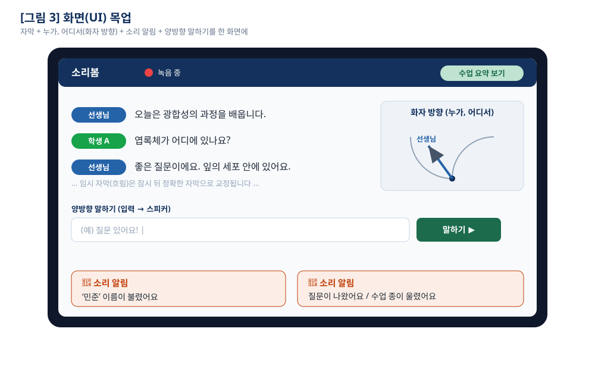
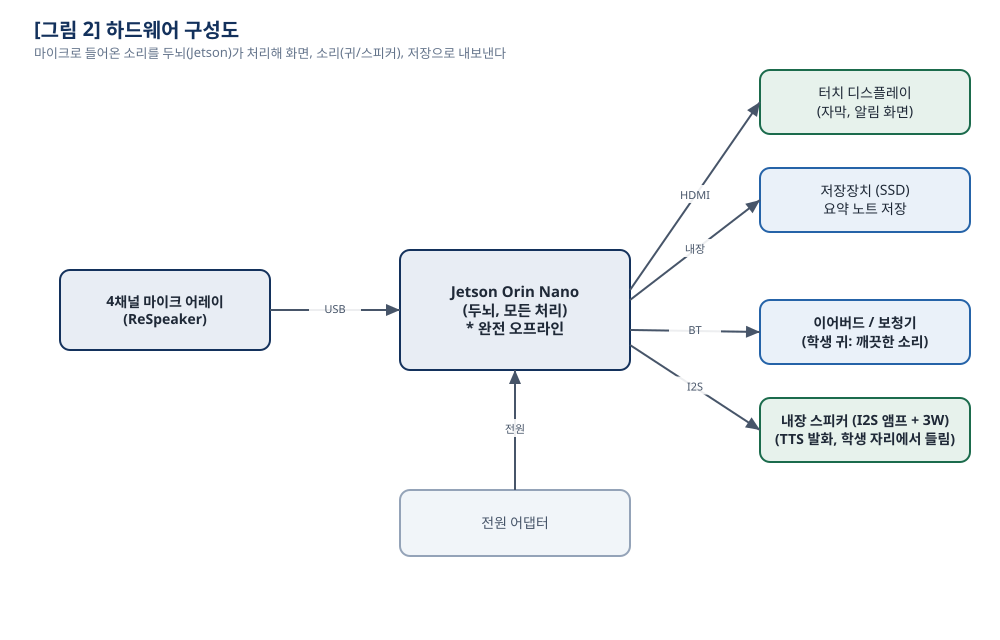
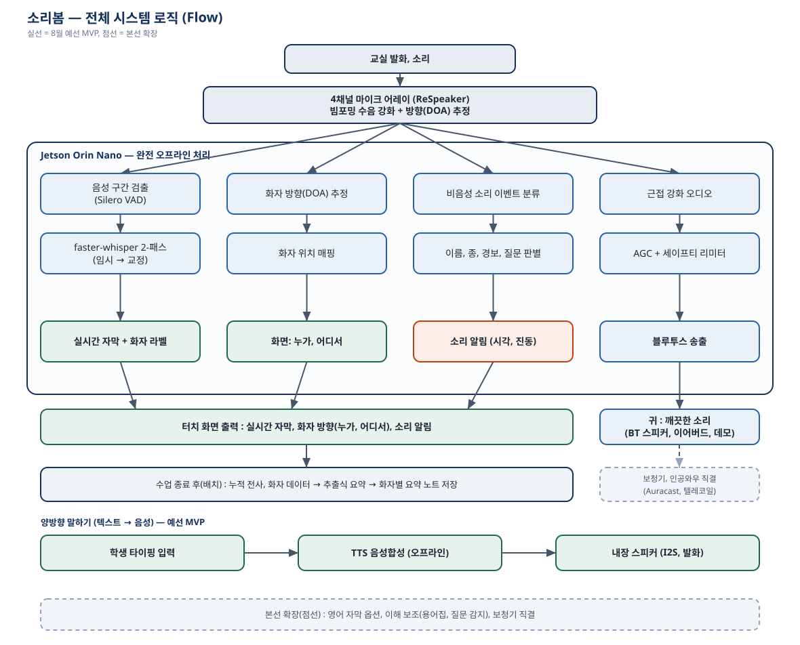

🟦 한 문장 요약
소리봄은 “교실에서 오가는 소리를 글자와 방향으로 보여 주고, 말하기 어려운 학생의 타이핑을 대신 소리 내어 읽어 주는, 인터넷 없이 혼자 도는 작은 컴퓨터”입니다.
이 한 문장을 이해하는 것이 이 책 전체의 목표입니다.
목차
1부 왜 이걸 만들었나 — 소리가 안 들리는 교실
1.1 어느 학생의 하루 / 1.2 세 가지 어려움 / 1.3 당사자의 한마디 / 1.4 우리의 목표
2부 소리봄이 하는 일 — 세 가지 기능
2.1 자막 / 2.2 방향 / 2.3 말하기 / 2.4 한 화면에서 함께
3부 컴퓨터가 ‘소리를 듣는다’는 것
3.1 소리란 무엇인가 / 3.2 마이크와 숫자 / 3.3 샘플레이트·채널
4부 기능① 실시간 자막 (귀 대신 눈으로)
4.1 음성인식 / 4.2 VAD / 4.3 우리의 발견: 모델보다 단어 / 4.4 측정
5부 기능② 누가·어디서 (소리의 방향)
5.1 방향을 어떻게 아나 / 5.2 빔포밍 / 5.3 화면에 화살표로
6부 기능⑥ 양방향 말하기 (글자를 목소리로)
6.1 음성합성 / 6.2 왜 Supertonic / 6.3 GPU로 실시간 / 6.4 폴백
7부 왜 ‘완전 오프라인’이 중요한가
8부 하드웨어 이야기 — 부품·조립·3D 프린팅
9부 우리가 내린 결정들과 그 이유
10부 코드는 어떻게 짜여 있나
11부 숫자로 증명하기 — 측정 결과
12부 개발하며 만난 함정들
13부 팀 이야기 — 누가, 어디서, 어떻게
일지 개발 일지 — 날짜별 이야기
14부 앞으로 — 아직 못 만든 것들
더알아보기 ① 실생활 속 기술 · ② 집에서 이해해보기 · ③ 안전·프라이버시·윤리 · ④ 심사 대비 심화 Q&A · ⑤ 기존 방법과의 비교 · ⑥ 확장 가능성과 의미 · ⑦ 만들며 배운 것
부록 A 용어 사전 · B 자주 묻는 질문 · C 파일 지도 · D 출처와 라이선스 · E 발표 대본·시연 구성 · F 비유 모음 · G 빠른 사용 안내 · H 제출·시연 체크리스트 · I 숫자로 보는 소리봄 · J 읽는 사람별 안내
⬛ 참고
이 문서의 모든 기술 수치(정확도·지연 시간 등)는 우리가 실제로 기기에서 측정한 값이며,
측정 방법은 11부와 부록 C에 정리했습니다.
한눈에
소리봄, 한 장으로
바쁜 사람을 위한 요약 — 이 한 장만 봐도 큰 그림이 잡힌다
무엇인가
교실의 소리를 글자(자막)와 방향(화살표)으로 보여 주고, 말하기 어려운
학생의 타이핑을 목소리로 대신 말해 주는, 인터넷 없이 혼자 도는 작은 컴퓨터.
세 가지 기능
①
실시간 자막 (말 → 글자)
②
누가·어디서 (방향 화살표)
⑥
양방향 말하기 (타이핑 → 목소리)
핵심 성능 (실측)
0.0%
조용할 때 자막 글자 오류
0.7%
시끄러울 때 자막 글자 오류
~0.6초
자막 지연
~1.8초
말하기 지연
1.5°
방향(DOA) 오차
무엇이 다른가
완전 오프라인
음성이 기기 밖으로 안 나감(프라이버시), 인터넷 없이 동작
방향 표시
4채널 마이크로 “누가·어디서”를 화살표로
양방향
듣기만이 아니라, 학생이 말하도록도 도움
현장 맞춤
‘오늘의 단어’ 힌트로 교과 용어까지 정확
누가 만들었나
팀 제주 BTS — 강주언(리더 · 말하기·하드웨어·통합),
함도유(방향·화면·통합), 강구현(자막). 한 아파트 커뮤니티실에
소리봄 컴퓨터를 두고, 매일 번갈아 가며 개발했습니다.
🟦 더 알고 싶다면
이 요약의 각 항목은 뒤에서 비유와 예시로 자세히 풀립니다. 기능은 2·4·5·6부,
성능은 11부, 팀 이야기는 13부를 보세요.
PART 1
왜 이걸 만들었나
소리가 안 들리는 교실에서는 무슨 일이 벌어질까
1.1 어느 학생의 하루
수업 시간을 상상해 봅시다. 선생님이 칠판 앞에서 설명을 하고, 뒤쪽에서 한 친구가 질문을 던집니다.
옆자리 친구는 작은 목소리로 “몇 쪽이야?”라고 묻고, 복도에서는 종이 울립니다.
귀가 잘 들리는 학생에게 이 모든 것은 동시에, 자동으로 들어옵니다.
누가 말하는지, 어디서 소리가 나는지, 그게 중요한 말인지 아닌지를 힘들이지 않고 구분합니다.
그런데 청각장애가 있거나 잘 안 들리는(난청) 학생에게 같은 교실은 전혀 다른 곳입니다.
소리는 뭉쳐서 들리거나, 아예 들리지 않습니다. 선생님 입을 아무리 봐도,
뒤에서 누가 말을 시작하면 그쪽을 돌아볼 신호조차 받지 못합니다.
수업 내용은 놓치고, 친구들의 웃음이 왜 터졌는지 모르고, 자기 이름이 불렸는지도 모른 채 지나갑니다.
🟪 비유로 이해하기소리가 다 꺼진 채로 자막도 없는 외국 영화를 보는 것과 비슷합니다.
화면(칠판·표정)은 보이지만, 무슨 말이 오가는지, 방금 누가 끼어들었는지 알 수 없습니다.
게다가 이 영화는 되감기가 안 됩니다. 수업은 계속 흘러가니까요.
1.2 교실에서 놓치는 세 가지
당사자에게 물어보니, 어려움은 크게 세 갈래였습니다.
누가·어디서 말하는지 모른다. 여러 명이 말할 때, 소리를 방향으로 구분하지 못하면
“지금 누구를 봐야 하지?”부터 막힙니다. 대화에 낄 수가 없습니다.
말이 아닌 소리를 놓친다. 이름을 부르는 소리, 종소리, “질문 있어요?” 같은 신호를
놓치면 반응할 타이밍을 통째로 잃습니다.
하고 싶은 말을 못 한다. 듣는 것만 문제가 아닙니다. 발음이 또렷하지 않으면
말하기 자체가 부담이라, 알아도 손을 들지 못합니다.
🟦 쉽게 말하면
문제는 “안 들린다” 하나가 아니라 ①누가·어디서 ②무슨 소리인지 ③내가 말하기의
세 가지가 한꺼번에 막힌다는 것입니다. 소리봄은 이 셋을 각각 도와주려고 합니다.
1.3 당사자의 한마디 — 우리를 바꾼 자문
우리는 처음에 “자막만 잘 띄우면 되겠지”라고 생각했습니다. 그런데 인공와우(달팽이관에 심는
청각 보조 장치)를 실제로 쓰는 당사자에게 자문을 구하면서 생각이 바뀌었습니다.
가장 강하게 나온 말은 이것이었습니다.
🟧 소리봄에서는“자막보다, 누가 말하는지를 아는 게 더 급해요.”
이 한마디 때문에 우리는 ‘화자 방향 표시(누가·어디서)’를 자막과 동급의 핵심 기능으로
끌어올렸습니다. 기술이 멋져서가 아니라, 실제로 필요한 사람이 그렇다고 했기 때문입니다.
1.4 그래서 우리의 목표는
소리봄이 이루려는 것을 한 문단으로 정리하면 이렇습니다.
교실의 소리를 ① 글자(자막)로 보여 주고, ② 그 소리가 어느 방향에서
났는지를 화살표로 알려 주며, 말하기 어려운 학생이 ③ 타이핑한 문장을 기기가 대신
또렷한 목소리로 말해 준다. 이 모든 것을 인터넷 없이, 기기 하나 안에서 해낸다.
1.5 잠깐 — 청각장애와 난청은 무엇이 다른가
이 작품을 이해하려면, 도우려는 대상을 먼저 알아야 합니다. 흔히 “안 들린다”를 한 덩어리로
생각하지만, 실제로는 정도와 종류가 다양합니다.
난청(잘 안 들림). 소리가 작게 들리거나 뭉개져 들립니다.
완전히 안 들리는 게 아니라, 또렷함이 떨어지는 경우가 많습니다. 시끄러운 곳에서
특히 힘들어집니다.
청각장애(많이/거의 안 들림). 소리 정보를 대부분 놓칩니다.
보청기나 인공와우 같은 보조 장치의 도움을 받기도 합니다.
⬛ 용어 — 보청기 / 인공와우보청기는 소리를 크게 키워 주는 장치(남은 청력을 활용).
인공와우는 소리를 전기 신호로 바꿔 청각 신경에 직접 전달하는 장치입니다.
둘 다 도움이 되지만, 시끄러운 교실에서 여러 명이 말할 때는 여전히 어렵습니다.
🟧 소리봄에서는
소리봄은 보청기·인공와우를 대체하려는 게 아니라, 그것들이 도와주지 못하는
부분(누가·어디서 말하는지, 놓친 말의 자막, 내 목소리 내기)을 보완합니다.
그래서 어느 정도로 안 들리든 도움이 됩니다.
1.6 왜 하필 ‘교실’이 특히 어려운가
조용한 일대일 대화는 그나마 낫습니다. 그런데 교실은 가장 어려운 조건이 다 모여
있습니다.
여러 사람이 여러 방향에서 말합니다(선생님, 뒷자리, 옆자리).
배경 소음이 많습니다(의자 끄는 소리, 웅성거림).
수업은 되감기가 안 됩니다. 한 번 놓치면 그걸로 끝입니다.
전문 용어가 쏟아집니다(광합성, 엽록체…). 입 모양만 봐선 알기 어렵습니다.
🟩 그래서 소리봄의 세 기능이 딱 맞는다
여러 방향 → 방향 화살표, 놓치는 말 → 자막, 못 하는 말 →
말하기, 전문 용어 → 단어 힌트로 정확히, 소음 → 빔포밍으로 또렷하게.
교실이라는 어려운 조건을 정면으로 겨냥한 설계입니다.
1.7 ‘소리봄’이라는 이름과, 우리가 이 문제를 고른 이유
이름은 ‘소리봄(SoundSight)’입니다. 소리를 ‘본다’는 뜻을 담았습니다.
귀로 못 듣는 소리를 눈으로 보게 해 준다는 이 작품의 핵심을 이름 하나에 담으려 했습니다.
(봄에는 ‘새로 피어난다’는 느낌도 함께 있습니다.)
🟧 왜 하필 이 문제였나
화려한 주제는 많습니다. 그런데 우리는 “기술이 정말 필요한 곳”을 찾고 싶었습니다.
교실에서 소리를 놓쳐 힘들어하는 친구의 이야기, 그리고 인공와우 당사자의 자문(1.3)이
우리를 이 문제로 이끌었습니다. “멋져 보이는 것”이 아니라 “누군가에게 실제로 도움이 되는
것”을 만들자는 게 팀의 출발점이었습니다.
🟦 고등학생 셋이 며칠 만에?
맞습니다. 우리는 개발 전문가가 아니고, 시간도 며칠뿐이었습니다. 그래서
“확실히 되는 세 가지”에 집중하고, 어려운 계산은 이미 잘하는 도구(칩·오픈소스)에
맡기고, 우리는 “무엇을 왜 만드는가”에 힘을 썼습니다. 이 설명서 전체가 그
선택들의 기록입니다.
🟩 1부를 마치며
문제는 분명합니다 — 교실에서 누가·어디서·무슨 말인지 놓치고, 내 말도
하기 어렵다. 소리봄은 그 넷을 정면으로 돕습니다. 이제 2부에서 그게 무엇인지,
3부부터 어떻게 가능한지를 봅니다.
🟩 결론
소리봄은 “대단한 신기술”을 자랑하려는 물건이 아니라, 한 학생이 수업에 참여할 수 있게
돕는 도구입니다. 이 관점을 기억하면 뒤에 나오는 모든 기술 선택의 이유가 쉽게 이해됩니다.
PART 2
소리봄이 하는 일
세 가지 기능을, 기술 용어 없이 먼저 그림처럼
소리봄에는 세 가지 기능이 있습니다. 뒤에서 하나씩 깊이 들어가겠지만,
여기서는 “무엇을 하는 물건인지”만 그림처럼 잡아 두겠습니다.
2.1 기능① — 말을 글자로 (실시간 자막)
누군가 말을 하면, 화면 아래쪽에 그 말이 큰 글자로 나타납니다.
말이 끝나고 약 0.6초 뒤면 글자가 뜹니다. 거의 바로바로입니다.
🟪 비유로 이해하기
유튜브 영상의 실시간 자동 자막과 비슷합니다. 다만 소리봄은 그걸
인터넷 없이, 교실 현장의 이 작은 기기 혼자서 해냅니다.
2.2 기능② — 소리가 난 방향을 화살표로 (누가·어디서)
화면 위쪽에는 동그란 나침반 같은 그림이 있습니다. 누군가 말하면,
그 사람이 있는 방향으로 파란 화살표가 돕니다. 앞에서 말하면 화살표가 위(12시)를,
오른쪽에서 말하면 3시 방향을 가리킵니다.
🟦 쉽게 말하면
“지금 소리가 어느 쪽에서 났는지”를 화살표로 알려 줘서, 학생이 그쪽으로
고개를 돌릴 수 있게 합니다. 자막이 무엇을이라면, 이 기능은 어디서입니다.
2.3 기능⑥ — 타이핑을 목소리로 (양방향 말하기)
화면 맨 아래에는 글자 입력칸이 있습니다. 학생이 하고 싶은 말을 타이핑하고
엔터를 누르면, 약 2초 뒤 기기의 스피커가 또렷한 한국어 목소리로 대신
말해 줍니다. 발음이 어려워 손을 못 들던 학생이, 자기 생각을 반 전체에 전할 수 있습니다.
🟧 소리봄에서는
이 기능을 “양방향”이라고 부릅니다. 다른 자막 기기들은 듣기만(한 방향) 돕지만,
소리봄은 학생이 말하는 것(반대 방향)까지 돕기 때문입니다.
2.4 그리고 — 세 기능이 한 화면에서 함께
가장 중요한 점: 이 세 가지가 따로 노는 세 개의 앱이 아니라,
하나의 화면에서 동시에 돌아갑니다. 위에는 방향 화살표, 가운데·아래에는 자막,
맨 아래에는 입력칸이 함께 있습니다. 말하면 자막과 화살표가 같이 반응하고,
타이핑하면 스피커가 말합니다.

소리봄의 한 화면: ① 위쪽 방향 나침반, ② 가운데 자막, ③ 맨 아래 말하기 입력칸.
2.5 한 장면으로 보기 — 어느 과학 시간
세 기능이 실제 교실에서 어떻게 동시에 학생을 돕는지, 짧은 장면으로 그려 보겠습니다.
주인공은 난청이 있는 학생 ‘민서’(가상의 이름)입니다.
🟪 장면 — 3교시 과학
(1) 선생님이 앞에서 설명을 시작한다. 민서의 화면 아래에 큰 글자로
“오늘은 광합성에 대해 배웁니다”가 뜬다(자막). 동시에 위쪽 나침반의
화살표가 12시(앞)를 가리켜, 소리가 교탁 쪽에서 났음을 알려 준다(방향).
(2) 뒷자리 친구가 갑자기 질문한다. 민서는 못 들었지만, 화살표가 5시
방향(오른쪽 뒤)으로 홱 돈다. 민서는 그쪽을 돌아본다. 자막에는
“광합성은 밤에도 일어나나요?”가 뜬다. 민서는 대화의 흐름을 놓치지 않았다.
(3) 민서도 할 말이 생겼다. 발음이 또렷하지 않아 평소엔 참았지만, 오늘은
화면 아래 입력칸에 “엽록체가 하는 일을 다시 설명해 주세요”라고 타이핑하고 엔터를 누른다.
2초 뒤, 민서 자리의 스피커가 또렷한 목소리로 대신 말한다(말하기).
친구들은 소리 나는 방향을 보고 민서가 질문했다는 걸 안다.
🟩 이 장면이 말하는 것
세 기능은 따로 떨어진 기술이 아니라, 한 학생이 수업에 온전히 참여하도록 함께
작동합니다. 무엇을(자막), 어디서(방향), 그리고 내 목소리로(말하기) — 이 셋이 만나야 비로소
“참여”가 됩니다.
2.6 또 다른 장면 — 이름이 불렸을 때
세 기능이 함께 작동하는 장면을 하나 더 보겠습니다. 이번엔 모둠 활동 시간입니다.
🟪 장면 — 모둠 활동
(1) 선생님이 “민서야, 발표해 볼래?”라고 부릅니다. 민서 화면 위 화살표가
교탁 방향을 가리키고, 자막에 자기 이름이 뜹니다. 민서는
자기가 불린 걸 알아챕니다.
(2) 옆 모둠원이 작게 “여기 3번 답 뭐야?” 하고 묻습니다. 화살표가
바로 옆(3시)으로, 자막이 그 말을 보여 줍니다. 민서는 고개를 돌려 대화에
낍니다.
(3) 민서가 발표합니다. 입력칸에 답을 적고 엔터 → 스피커가 또렷하게
대신 발표합니다. 모둠원들은 소리 나는 방향을 보고 민서가 발표한 것을 압니다.
🟦 두 장면의 공통점
두 장면 모두 “놓치지 않고(자막) + 어디서인지 알고(방향) + 내가 참여한다(말하기)”는
똑같은 흐름입니다. 상황이 달라도 세 기능이 함께 작동해 참여를 돕는다는 게 핵심입니다.
🟩 여기까지의 정리
소리봄 = 자막(무엇을) + 방향(어디서) + 말하기(내 목소리 대신),
이 셋이 인터넷 없이 한 화면에서. 다음 3부부터는 “그게 대체 어떻게 가능한가”를
가장 밑바닥(소리란 무엇인가)부터 차근차근 풀어 갑니다.
PART 3
컴퓨터가 ‘소리를 듣는다’는 것
모든 이야기의 밑바닥 — 소리가 어떻게 숫자가 되는가
자막이든 방향이든, 컴퓨터가 소리로 뭔가를 하려면 먼저 소리를 컴퓨터가 다룰 수 있는
형태로 바꿔야 합니다. 이 장은 그 기초입니다. 여기만 이해하면 4~6부가 훨씬 쉬워집니다.
3.1 소리란 무엇인가 — 공기의 떨림
소리는 공기의 떨림(진동)입니다. 누가 말을 하면 성대가 떨리고, 그 떨림이 공기를
타고 물결처럼 퍼져 우리 귀의 고막을 흔듭니다. 큰 소리는 크게 떨리고(진폭이 크고),
높은 소리는 빠르게 떨립니다(진동수가 높습니다).
🟪 비유로 이해하기
잔잔한 물에 돌을 던지면 물결이 동그랗게 퍼집니다. 소리도 똑같이 공기의 물결입니다.
목소리가 크다 = 물결이 높다, 목소리가 높다(고음) = 물결이 촘촘하다.
3.2 마이크는 떨림을 ‘숫자’로 바꾼다
마이크는 공기의 떨림을 받아 전기 신호로 바꾸고, 컴퓨터는 그 신호를 아주 짧은
간격으로 숫자로 받아 적습니다. “지금 공기가 이만큼 밀렸다”를 1초에 수천, 수만 번
숫자로 기록하는 것입니다. 그 숫자들의 긴 줄이 바로 컴퓨터가 다루는 ‘소리’입니다.
🟦 쉽게 말하면
컴퓨터에게 소리는 “시간 순서대로 늘어선 숫자들의 긴 줄”일 뿐입니다.
-0.02, 0.05, 0.13, 0.08 … 이런 숫자들이 물결의 높낮이를 그대로 적어 둔 것입니다.
3.3 두 가지 중요한 숫자 — 샘플레이트와 채널
이 “숫자 받아 적기”에는 두 가지 설정이 있습니다. 소리봄 설정 곳곳에 나오니 알아 둡시다.
① 샘플레이트(sample rate) — 1초에 몇 번 적는가
1초에 소리를 몇 번 숫자로 적는지를 샘플레이트라고 하고, 단위는 Hz(헤르츠)입니다.
소리봄은 16,000Hz(16kHz)를 씁니다. 1초에 1만 6천 번 적는다는 뜻입니다.
⬛ 용어 — 16kHz
1초에 16,000개의 숫자로 소리를 기록. 사람 말소리를 알아듣기에 충분한 촘촘함이라,
음성인식에서 표준처럼 쓰입니다. (음악용은 보통 44,100Hz로 더 촘촘합니다 — 6부 참고)
🟪 비유로 이해하기
영화가 1초에 여러 장의 사진(프레임)을 빠르게 넘겨 움직임처럼 보이게 하듯,
샘플레이트는 “1초에 몇 장의 소리 사진을 찍는가”입니다. 촘촘할수록 원래 소리에 가깝지만,
그만큼 숫자가 많아져 처리할 양도 늘어납니다.
② 채널(channel) — 마이크가 몇 개인가
마이크가 하나면 소리 줄이 1개(모노), 둘이면 2개(스테레오)입니다. 채널이 여러 개면
같은 소리를 여러 위치에서 동시에 받은 셈이라, 나중에 “어느 쪽에서 왔나”를
따질 수 있습니다. 이게 5부(방향)의 씨앗입니다.
🟧 소리봄에서는
소리봄의 마이크(ReSpeaker)는 마이크 4개가 달려 있고, 컴퓨터로는 6개의 소리 줄이
들어옵니다. 그중 0번 줄은 마이크 칩이 미리 깨끗하게 다듬어 준 소리이고
(자막에 이걸 씁니다), 1~4번은 마이크 4개의 원본(방향 계산에 쓰입니다), 5번은 잡음 제거용
참고 소리입니다. — 자세한 건 5부와 8부에서.
3.4 조금 더 깊이 — 소리의 세 가지 성질
소리를 조금 더 자세히 나누면 세 가지 성질로 볼 수 있습니다. 이걸 알아 두면 “왜 사람 목소리는
16kHz면 충분한가” 같은 질문에 답할 수 있습니다.
크기(진폭). 얼마나 세게 떨리는가 = 소리가 크다/작다. 컴퓨터의 숫자로는
값이 크게 출렁이면 큰 소리, 잔잔하면 작은 소리입니다.
높이(진동수/주파수). 1초에 몇 번 떨리는가 = 소리가 높다(고음)/낮다(저음).
단위는 Hz입니다. 사람 목소리는 대략 100Hz~3,000Hz 사이에 핵심 정보가 모여 있습니다.
음색. 같은 높이의 “아”라도 사람마다 다르게 들리는 이유. 여러 진동수가
섞인 비율이 달라서입니다. 목소리를 구별하는 단서가 여기 있습니다.
🟦 왜 16kHz면 사람 말에 충분한가
소리를 숫자로 정확히 담으려면, 담고 싶은 가장 높은 소리의 두 배로 찍어야 한다는
규칙이 있습니다(표본화 정리). 사람 말의 중요한 정보는 대략 8kHz 아래에 있으니, 그 두 배인
16kHz면 충분합니다. 음악은 더 높은 소리까지 담아야 해서 44.1kHz를 씁니다.
🟪 비유로 이해하기
달리는 사람을 사진으로 담을 때, 너무 띄엄띄엄 찍으면 어디서 어떻게 뛰었는지
놓칩니다. 빠른 움직임(높은 소리)일수록 더 자주 찍어야 원래 모습이 살아납니다.
그 “충분히 자주”의 기준이 두 배입니다.
3.5 아날로그와 디지털 — 물결을 계단으로
공기의 떨림은 매끄러운 물결(아날로그)이지만, 컴퓨터는 숫자(디지털)만
다룹니다. 그래서 매끄러운 물결을 아주 촘촘한 계단으로 바꿔 근사합니다. 계단이
촘촘할수록(샘플레이트가 높을수록, 숫자의 정밀도가 높을수록) 원래 물결에 가까워집니다.
⬛ 용어 — 디지털화(샘플링)
매끄러운 소리 물결을 일정 간격마다 값을 재어 숫자로 바꾸는 것. 이 숫자들의 줄이
컴퓨터가 저장·처리하는 소리입니다.
🟧 소리봄에서는
소리봄은 값의 정밀도를 아주 높게 쓰지 않고 가볍게(양자화, int8) 모델을 돌립니다.
작은 기기에서 빠르게 처리하려는 선택인데, 사람 말을 알아듣는 데는 이 정도로 충분했습니다.
“필요한 만큼만 정밀하게”가 작은 기기의 지혜입니다.
3.6 소리를 왜 ‘잘게 나눠’ 다루나
컴퓨터는 마이크에서 소리를 한 번에 다 받지 않고, 아주 짧은 조각(예: 30밀리초,
즉 0.03초)씩 계속 받아 처리합니다. 이 조각을 블록(block)이라고 합니다.
🟦 왜 통째로 안 받고 조각으로
말이 끝날 때까지 기다렸다 처리하면 자막이 너무 늦게 뜹니다. 짧은 조각으로 계속
받아야, “지금 말이 시작됐나/끝났나”를 실시간으로 판단할 수 있습니다(VAD, 4.2).
🟪 비유로 이해하기
긴 영화를 다 보고 요약하는 게 아니라, 장면장면 넘어오는 대로 따라가며
이해하는 것과 같습니다. 소리도 조각조각 흐르는 대로 처리해야 지체 없이 반응합니다.
🟧 소리봄에서는
마이크가 30밀리초짜리 블록을 계속 흘려보내면, VAD가 “말하는 구간”만 이어 붙여 한 덩어리로
만들고(4.2), 그 덩어리를 음성인식에 넘깁니다. 이 흐름(파이프라인)이 실시간 자막의 뼈대입니다.
🟩 3부 정리소리 = 공기의 떨림 → 마이크가 전기로 → 컴퓨터가 숫자의 긴 줄로 기록.
그 기록의 촘촘함이 샘플레이트(소리봄=16kHz), 몇 곳에서 받았는지가 채널(소리봄=마이크
4개). 이제 이 ‘숫자 줄’을 가지고 글자를 만들어 봅시다.
PART 4
기능① 실시간 자막
귀 대신 눈으로 — 말을 글자로 바꾸는 법
4.1 음성인식(STT)이란
소리(숫자 줄)를 받아 글자로 바꾸는 기술을 음성인식, 영어로
STT(Speech-To-Text, ‘말→글자’)라고 합니다. 스마트폰에 대고 말하면 문자가 써지는 그 기능입니다.
⬛ 용어 — STT / WhisperSTT = 말을 글자로 바꾸는 기술. 소리봄은 그중 Whisper(위스퍼)라는
유명한 음성인식 모델을 씁니다. 정확히는 이를 빠르게 개조한 faster-whisper 버전을 씁니다.
‘모델’이 뭔가요?
여기서 모델은 “수많은 예시로 미리 공부를 끝내 둔 프로그램 덩어리”를 뜻합니다.
Whisper는 어마어마한 양의 ‘소리–글자’ 짝을 미리 학습해서, 새 소리를 들으면 가장 그럴듯한
글자를 내놓습니다. 우리는 이 미리 공부된 모델을 가져다 쓰기만 하면 됩니다.
🟪 비유로 이해하기
받아쓰기 시험을 아주 많이 연습한 사람을 데려온 것과 같습니다. 우리가 그 사람을
처음부터 가르칠 필요는 없고, 이미 잘하는 사람에게 “이 소리 좀 받아써 줘” 하고
맡기는 셈입니다.
모델에는 크기가 있다 — small과 medium
Whisper 모델은 크기별로 있습니다. 작으면(small) 빠르지만 조금 덜 똑똑하고,
크면(medium) 똑똑하지만 느리고 메모리를 많이 먹습니다. 이 선택이 뒤에서 중요한
이야기가 됩니다(4.3).
4.2 조용할 땐 쉬어야 한다 — VAD
교실에는 말이 없는 조용한 순간이 계속 있습니다. 그 조용한 구간까지 음성인식에
집어넣으면, 컴퓨터는 힘만 쓰고(연산 낭비), 심지어 없는 말을 지어내기도 합니다.
그래서 “지금 사람이 말하고 있는가?”만 먼저 가려내는 장치가 필요합니다. 그게 VAD입니다.
⬛ 용어 — VADVAD(Voice Activity Detection, 음성 활동 감지) = 소리 줄에서 사람이 말하는
구간만 잘라내는 기능. “여기부터 여기까지가 한 마디”라고 표시해 줍니다.
🟪 비유로 이해하기
긴 녹음에서 말소리가 있는 부분에만 형광펜을 긋는 것과 같습니다.
형광펜이 그어진 곳만 받아쓰기에 넘기면, 빠르고 깔끔합니다.
🟧 소리봄에서는
마이크에서 소리가 계속 들어오면 → VAD가 “한 마디”가 끝나는 순간을 잡아 그 덩어리만
잘라 → Whisper에게 넘겨 글자로 바꿉니다. 이 흐름이 자막의 핵심 파이프라인입니다.
(‘파이프라인’ = 물이 관을 따라 흐르듯, 일이 정해진 순서로 이어지는 것)
4.3 우리의 진짜 발견 — 모델을 키우기보다 ‘단어’를 알려 주기
처음 계획은 2단계 자막이었습니다. 작은 모델(small)로 빠르게 임시 자막을 띄우고,
큰 모델(medium)로 천천히 고쳐 주는 방식이었죠. 그럴듯했지만, 실제로 기기에서
재 보니 두 가지 문제가 있었습니다.
큰 모델은 메모리를 넘겼습니다. 소리봄 기기는 메모리가 8GB인데, 자막·방향·말하기를
다 올린 상태에서 medium까지 얹으면 메모리가 터졌습니다(OOM). — 7·8부에서 설명.
큰 모델이 더 정확하지도 않았습니다. 놀랍게도 small과 medium의 정확도가
거의 같았습니다. 특히 교과 용어에서 둘 다 똑같이 틀렸습니다.
진짜 문제는 모델 크기가 아니라 ‘낯선 단어’였습니다. 예를 들어 “광합성”을:
방법
인식 결과
small 모델 그대로
“과막성”, “광업성”
❌ 틀림
medium 모델(더 큼)
“광학성”
❌ 여전히 틀림
small + 오늘 배울 단어 알려 주기
“광합성”
✅ 정확
수업 전에 “오늘 나올 단어들”(광합성, 엽록체, 이산화탄소, 칠판, 수행평가…)을 힌트로
미리 알려 주자, 작은 모델도 정확히 알아들었습니다. 이걸 초기 프롬프트(initial prompt)라고 합니다.
⬛ 용어 — 초기 프롬프트
음성인식에게 미리 주는 ‘단어 힌트’. “오늘은 과학 시간이고 이런 단어가 나올 거야”라고
귀띔해 주면, 비슷하게 들리는 후보 중 맞는 단어 쪽으로 기울여 인식합니다.
🟥 이건 ‘지어내기’가 아닙니다
힌트를 준다고 해서 없는 말을 만들어 내는 게 아닙니다. 어차피 비슷하게 들리는 여러 후보 중에서
고르는 기준을 살짝 바로잡을 뿐이라, 안전합니다. “광업성/광학성/광합성”처럼 발음이
비슷한 것들 중 수업 맥락에 맞는 것을 고르게 하는 것입니다.
🟩 그래서 결정“작은 모델(small) 하나 + 단어 힌트”로 확정했습니다. 빠르고, 메모리도 여유롭고,
정확도는 오히려 더 좋았습니다. — 비싼 장비를 더 사는 대신, 문제를 정확히 이해해서 푼
이 판단이 우리 작품에서 가장 자랑스러운 부분 중 하나입니다.
4.4 얼마나 정확하고, 얼마나 빠른가 (측정)
“잘 된다”고 말로만 하지 않고, 실제로 재 봤습니다. 자세한 방법과 표는 11부에 있습니다.
0.0%
조용할 때 글자 오류율(CER)
0.7%
시끄러울 때 글자 오류율
~0.6초
말 끝난 뒤 자막 뜨기까지
4.5 그런데 AI 모델은 대체 어떻게 ‘배우나’
Whisper 같은 모델이 소리를 글자로 바꿀 수 있는 이유는 엄청난 양의 예시로 미리
공부했기 때문입니다. 사람이 외국어를 배울 때 수천 개의 예문을 보며 감을 잡듯,
모델은 ‘이런 소리 → 이런 글자’ 짝을 수백만 개 보면서, 규칙을 스스로
조금씩 잡아 갑니다.
🟪 비유로 이해하기
아기가 말을 배우는 과정과 비슷합니다. 아무도 문법책을 안 줘도, 아기는 같은 소리와
상황을 수없이 반복해 듣다가 어느 날 뜻을 연결합니다. 모델도 정답을 보며 틀리면
조금 고치고, 또 틀리면 또 고치는 것을 수백만 번 반복해 똑똑해집니다.
🟦 그래서 ‘낯선 단어’에 약하다
모델은 많이 본 것은 잘하고, 거의 못 본 것은 약합니다. “광합성”처럼
일상 대화에 잘 안 나오는 교과 용어는 학습 때 적게 봐서 헷갈립니다. 그래서 단어 힌트가
그렇게 효과적이었던 것입니다(4.3). 없던 지식을 넣는 게 아니라, “이 상황에선 이 단어일
가능성이 높아”라고 주의를 돌려 주는 것입니다.
4.6 작은 기기에서 빠르게 — int8이라는 다이어트
모델은 원래 아주 정밀한 숫자로 계산하는데, 그러면 무겁고 느립니다. 그래서 숫자의
정밀도를 적당히 낮춰 가볍게 만드는 기술을 씁니다. 이걸 양자화(int8)라고
합니다. 사진을 화질 조금 낮춰 용량을 크게 줄이는 것과 비슷합니다.
🟧 소리봄에서는
자막 모델을 int8로 가볍게 만들어 작은 기기의 GPU에 올렸습니다. 정확도는 거의
그대로면서, 빠르고 메모리를 적게 씁니다. 이 덕분에 자막·방향·말하기를 한 기기에
함께 올릴 수 있었습니다(11.5).
4.7 얼마나 신중하게 고를까 — beam(후보 폭)
모델은 소리를 들으며 여러 글자 후보를 떠올립니다. 후보를 넓게
살펴보면 더 정확할 수 있지만 느리고, 좁게 보면 빠르지만 가끔 실수합니다.
이 후보 폭을 beam(빔)이라고 합니다.
🟧 소리봄에서는
소리봄은 가장 빠른 설정(beam=1)을 씁니다. 단어 힌트 덕분에 좁게 봐도
충분히 정확했기 때문입니다. “정확도가 이미 좋으면, 굳이 느리게 만들지 않는다.”
실시간 자막에는 속도도 정확도만큼 중요합니다.
4.8 자막이 틀릴 때 — 어떤 실수를 하나
완벽한 음성인식은 없습니다. 소리봄도 가끔 틀립니다. 어떤 종류의 실수를 하는지 알면,
무엇을 조심하고 어떻게 개선할지 보입니다. 우리가 관찰한 실수는 크게 셋이었습니다.
낯선 단어 오인식. “광합성 → 광업성”처럼 교과 용어를 비슷한 소리로 잘못 씀.
→ 단어 힌트로 대부분 해결(4.3).
띄어쓰기 차이. “읽어 오세요 ↔ 읽어오세요”. 뜻은 같아 문제되지 않지만
WER 숫자는 올라감(11.2).
아주 짧은 말·웅얼거림. “응”, “어…” 같은 짧은 소리나 불명확한 발음은 놓치거나
엉뚱하게 잡을 수 있음. → VAD가 너무 짧은 소리는 거르고, 문맥 힌트로 보완.
🟧 소리봄에서는 — 안전한 실수만 하도록
가장 위험한 실수는 없는 말을 그럴듯하게 지어내는 것입니다. 소리봄은
“이전 문장을 참고해 이어 쓰는” 기능을 꺼서, 짧은 발화에서 환각(지어내기)을
줄였습니다. 틀리더라도 비슷하게 틀리지, 엉뚱한 이야기를 만들지 않게 한 것입니다.
🟩 개선의 방향
자막은 보조이므로, 100%가 아니어도 큰 흐름을 놓치지 않게 돕는 게 목표입니다.
더 좋게 하려면 모델을 키우기보다(효과 적음), 그날 단어 힌트를 잘 넣고마이크 빔포밍을 살리는 게 실측상 효과적이었습니다.
4.9 한국어 자막이 특히 까다로운 이유
음성인식은 영어에서 먼저 발전해서, 한국어는 상대적으로 더 어렵습니다. 몇 가지
이유가 있습니다.
소리와 글자가 다르게 이어진다. ‘같이’를 [가치]로, ‘국물’을 [궁물]로 읽는 것처럼
발음 규칙이 많아, 소리만 듣고 원래 글자를 맞히기가 까다롭습니다.
조사·어미가 붙는다. ‘학교’, ‘학교에’, ‘학교에서’처럼 뒤에 붙는 말이 많아
경우의 수가 큽니다.
교과 용어가 드물다. 일상 대화엔 잘 안 나오는 ‘광합성·엽록체’ 같은 말은 모델이
적게 배워 약합니다(4.5).
🟩 그래서 우리 선택이 잘 맞았다
이 어려움들을 단어 힌트(교과 용어 보강, 4.3)와 빔포밍(잡음 제거, 5.2)으로
정면 대응했습니다. 그 결과가 CER 0%대입니다. 한국어의 약점을 알고 그 지점을
콕 집어 보완한 것이 효과적이었습니다.
🟦 이 숫자의 뜻CER은 ‘글자 단위로 몇 %를 틀렸나’입니다. 0.0%면 사실상 다 맞혔다는 뜻이고,
시끄러운 곳에서도 0.7%(1000글자 중 7글자)로 거의 완벽했습니다. 시끄러워도 정확한 비결은
마이크 칩의 ‘빔포밍’ 덕분인데, 그건 바로 다음 5부에서 설명합니다.
PART 5
기능② 누가·어디서
소리가 난 방향을 어떻게 알아내는가
1부에서 당사자가 가장 급하다고 한 것, 기억나시죠? “누가 말하는지 아는 것.”
이 장은 그 기능입니다. 소리봄은 소리가 어느 방향에서 났는지를 알아내 화면에
화살표로 보여 줍니다. 이걸 DOA라고 부릅니다.
⬛ 용어 — DOADOA(Direction Of Arrival, 도래 방향) = 소리가 도착한 방향.
“소리가 몇 도 방향에서 왔다”를 각도(0~359°)로 알려 줍니다.
5.1 방향을 어떻게 아나 — 귀가 둘인 이유
사람은 귀가 둘이라 방향을 압니다. 오른쪽에서 소리가 나면 오른쪽 귀에 아주
조금 먼저, 조금 더 크게 도착합니다. 이 미세한 시간 차이를 뇌가 계산해서
“아, 오른쪽이구나” 하고 압니다.
🟪 비유로 이해하기
번개가 치면 번쩍(빛) 먼저, 우르릉(소리) 나중에 옵니다. 그 시간 차로 번개가
얼마나 먼지 짐작하죠. 마찬가지로 마이크 여러 개에 소리가 도착하는 시간 차를 재면
소리가 온 방향을 계산할 수 있습니다.
소리봄의 마이크에는 작은 마이크 4개가 서로 다른 위치에 박혀 있습니다.
같은 소리라도 4개에 도착하는 시간이 미세하게 다르고, 그 차이를 계산하면 방향이 나옵니다.
5.2 빔포밍 — 시끄러워도 또렷하게
마이크가 여러 개면 방향만 아는 게 아닙니다. “말하는 사람 쪽 소리는 키우고, 다른 쪽
잡음은 줄이는” 것도 됩니다. 여러 마이크의 소리를 방향에 맞게 똑똑하게 합치면
원하는 방향의 소리만 도드라지게 만들 수 있습니다. 이걸 빔포밍이라고 합니다.
⬛ 용어 — 빔포밍(beamforming)
여러 마이크를 조합해 특정 방향의 소리에 ‘귀를 기울이는’ 기술. 마치 손을 귀에 대고
한쪽을 향하는 것처럼, 그 방향 소리는 또렷해지고 나머지 잡음은 죽습니다.
🟩 그래서 시끄러워도 정확했다
4부에서 “시끄러울 때도 글자 오류 0.7%”라고 했죠? 그 비결이 바로 이 빔포밍입니다.
말하는 사람 쪽 소리만 깨끗하게 뽑아 음성인식에 넘기니, 주변이 웅성거려도
자막이 흔들리지 않았습니다.
5.3 아주 중요한 결정 — 방향 계산은 ‘마이크 칩’이 한다
여기서 소리봄의 똑똑한 선택이 나옵니다. 위의 시간 차 계산과 빔포밍은 수학이 꽤 복잡합니다.
그런데 우리가 쓰는 마이크(ReSpeaker)에는 XMOS라는 전용 칩이 들어 있어서,
이 복잡한 계산을 마이크가 스스로 다 해 줍니다.
🟧 소리봄에서는
우리 컴퓨터(Jetson)는 방향을 직접 계산하지 않습니다. 그냥 마이크 칩에게
“지금 방향 각도 몇 도야?”라고 물어보고 숫자만 받아 옵니다. 계산은 칩이 이미
끝내 놨으니까요. 덕분에 컴퓨터의 힘은 아껴서 음성인식(자막)에 몰아줄 수 있습니다.
🟪 비유로 이해하기
복잡한 계산을 전자계산기가 대신 해 주는 것과 같습니다. 우리는 답만 받아 적으면 되고,
암산하느라 머리를 쓸 필요가 없습니다. “안 만들어도 되는 건 안 만든다” — 짧은 개발 기간에
아주 중요한 원칙입니다.
받은 각도를 화면 화살표로 바꾸기
마이크가 주는 각도와, 화면에서 사람이 보기 편한 각도는 기준이 다릅니다. 그래서 간단한 변환을
거칩니다: 화면각 = (앞쪽 기준값 − 마이크각) ÷ 360의 나머지. 이렇게 하면
앞은 12시, 시계 방향으로 자연스럽게 돕니다. 또 화살표가 덜덜 떨리지 않도록
부드럽게(평활화) 만들고, 사람이 말할 때만 화살표를 갱신합니다.
🟥 함정 — 조용할 때 화살표
소리가 없을 때도 방향 값은 직전 값이 남아 있습니다. 그걸 그대로 쓰면 아무도 말 안 하는데
화살표가 제멋대로 돕니다. 그래서 “목소리가 감지될 때만 화살표를 움직인다”는
규칙을 넣었습니다.
5.4 왜 마이크가 둘이 아니라 넷인가
귀가 둘이면 왼쪽/오른쪽은 잘 구분합니다. 그런데 앞과 뒤는 헷갈립니다.
두 귀에 도착하는 시간 차가 앞소리와 뒷소리가 비슷하기 때문입니다(사람도 뒤에서
나는 소리의 좌우는 알아도 앞뒤는 자주 헷갈립니다). 마이크를 사각형으로 네 개
배치하면 앞·뒤·좌·우를 360도로 구분할 수 있습니다.
🟪 비유로 이해하기
한 점의 위치를 정하려면 기준점이 여러 개일수록 정확합니다. GPS도 위성 여러 개의
신호 시간 차로 내 위치를 콕 집습니다. 마이크 넷도 같은 원리로 소리의 출처를 더 정확히
좁힙니다.
5.5 에코 제거 — 스피커 소리를 마이크가 되받지 않게
소리봄은 스피커로 말도 합니다(6부). 그런데 그 소리를 자기 마이크가 다시
주워 자막으로 만들면 곤란합니다(자기 말을 자기가 받아쓰는 꼴). 그래서 마이크 칩은
“방금 스피커로 내보낸 소리”를 참고해, 마이크에 들어온 것에서 그 부분을 빼줍니다.
이것이 에코(반향) 제거입니다.
🟧 소리봄에서는
3부에서 마이크가 6개의 소리 줄을 준다고 했죠? 그중 5번 줄이 바로
“스피커로 나간 참고 소리”입니다. 칩은 이걸 이용해 에코를 지웁니다. — 이 모든 걸 칩이 알아서
하니, 우리는 깨끗한 0번 줄만 받아 쓰면 됩니다.
5.6 ‘앞’이 어디인지는 케이스가 정한다 — 보정 이야기
마이크가 주는 각도는 마이크 자신의 기준입니다. 그런데 이 마이크가 케이스 안에서
어느 쪽을 향해 고정되느냐에 따라, 화면에서 ‘앞’이라고 부를 각도가 달라집니다.
그래서 케이스에 마이크를 고정한 뒤, 실제로 앞/좌/우/뒤에서 소리를 내어 화면과
맞는지 확인하고 기준값을 다시 맞춥니다(보정, calibration).
⬛ 용어 — 보정(캘리브레이션)
측정 기준을 실제와 맞도록 조정하는 것. 저울의 영점을 맞추는 것과 같습니다.
소리봄은 케이스 조립 후 ‘앞’ 기준 각도를 다시 맞춥니다(설정 파일의 한 값만 바꿈).
🟩 케이스 조립 후 측정 완료 — 평균 1.5°
케이스에 마이크를 고정한 뒤 네 방향에서 재어 평균 오차 1.5°를 확인했습니다.
이때 케이스가 마이크 구멍을 덮으면 방향이 크게 엉킨다는 것도 발견해, 마이크 면을
노출하도록 바로잡았습니다(자세히는 11.6). 순서를 지켜 정확한 숫자를 얻었습니다.
5.7 마이크의 LED가 방향을 알려 준다
소리봄 마이크(ReSpeaker) 윗면에는 LED 링(작은 불빛 여러 개)이 둘러 있습니다.
누가 말하면, 그 소리가 온 방향의 LED가 켜집니다. 즉 마이크 스스로 “지금 이쪽에서
소리가 나요”를 불빛으로 보여 주는 것입니다.
🟧 소리봄에서는 — 이 LED가 개발에 큰 도움이 됐다
방향을 눈으로 바로 확인할 수 있어서, 프로그램이 읽는 각도가 맞는지 LED와
비교하며 검증할 수 있었습니다. 특히 케이스 문제(아래)를 찾을 때, 마이크를 노출하니
LED가 방향을 또렷이 가리키는 것을 보고 “아, 케이스가 소리를 막고 있었구나”를 확인했습니다.
🟥 실제로 겪은 일 — 케이스가 방향을 망칠 뻔했다
케이스를 처음 씌웠을 때 방향 오차가 28~64°로 엉망이었고 잴 때마다 값이 달랐습니다.
원인은 케이스가 마이크 구멍을 덮어 소리가 반사돼 들어왔기 때문. 마이크 윗면
(구멍·LED)을 노출하자 오차가 1.5°로 회복됐습니다(11.6). → 최종 케이스는
마이크 위에 구멍(개구부)을 반드시 내야 합니다.
5.8 화살표가 덜덜 떨지 않게 — 부드럽게 만들기
칩이 주는 방향 값은 순간순간 조금씩 흔들립니다(같은 사람이 말해도 몇 도씩 왔다
갔다). 그대로 화면에 그리면 화살표가 덜덜 떨려 보기 어지럽습니다. 그래서 값을
부드럽게 만들어 화살표가 스르륵 따라가게 합니다. 이걸 평활화라고 합니다.
⬛ 용어 — 평활화(스무딩)
갑자기 튀는 값을 이전 값과 섞어 완만하게 만드는 것. 새 값으로 확 바꾸지 않고
조금씩 이동시켜, 떨림을 없애면서도 방향 변화는 따라가게 합니다.
🟪 비유로 이해하기
자동차 서스펜션(완충 장치)과 같습니다. 길이 울퉁불퉁해도(값이 튀어도) 차체는
부드럽게 갑니다. 대신 너무 물렁하면 반응이 느리니, 적당한 정도로 맞춥니다
(소리봄은 설정값 0.3).
🟧 소리봄에서는
평활화 덕분에 화살표가 떨지 않고 자연스럽게 방향을 가리킵니다. 또 목소리가 있을
때만 갱신하므로(5.3), 조용할 때 제멋대로 돌지도 않습니다. 작은 배려가 보기 편한 화면을
만듭니다.
🟩 5부 정리
방향 = 마이크 4개에 소리가 도착한 시간 차로 계산. 그 복잡한 계산과 빔포밍은
마이크 칩이 스스로 하고, 컴퓨터는 각도 숫자만 받아 화면 화살표로 보여 준다.
시끄러워도 정확한 자막의 비밀도 여기(빔포밍)에 있었다.
PART 6
기능⑥ 양방향 말하기
글자를 목소리로 — 컴퓨터가 말을 만든다는 것
6.1 음성합성(TTS)이란
4부의 음성인식이 ‘소리 → 글자’였다면, 이건 정반대로 ‘글자 → 소리’입니다.
글자를 넣으면 사람 목소리처럼 읽어 주는 기술을 음성합성, 영어로
TTS(Text-To-Speech, ‘글자→말’)라고 합니다.
⬛ 용어 — TTSTTS = 글자를 목소리로 바꾸는 기술. 지하철 안내방송, 내비게이션 음성,
AI 스피커의 대답이 모두 TTS입니다.
🟧 소리봄에서는
발음이 어려운 학생이 입력칸에 문장을 타이핑하면, TTS가 그걸 또렷한 한국어
목소리로 바꿔 스피커로 내보냅니다. 학생의 “목소리 대역” 역할입니다.
6.2 좋은 한국어 목소리를 찾기까지 — 실패의 기록
“한국어를 자연스럽게 읽어 주는, 인터넷 없이 도는 TTS”를 찾는 일은 생각보다 어려웠습니다.
우리는 여러 개를 시도하고 버렸습니다. 이 실패 과정 자체가 우리가 직접 조사하고
판단했다는 증거라, 솔직하게 남깁니다.
후보
왜 안 됐나 / 됐나
Piper
❌ 한국어 목소리 모델이 아예 없음(공식 확인).
MeloTTS
❌ 처음 계획했으나 팀 논의 끝에 폐기.
Kokoro
❌ 받은 모델에 한국어 목소리가 없음.
mimic3(kss-low)
❌ 발음을 만드는 부분이 영어용이라 한국어 발음이 뭉개짐. 소리 후처리로도 못 고침.
Supertonic v3
✅ 한국 회사(Supertone)가 만든 한국어 native TTS. 음질이 확연히 좋음 → 채택.
⬛ 용어 — sherpa-onnx / Supertonicsherpa-onnx = 음성 모델을 인터넷 없이 기기에서 빠르게 돌려 주는 실행 도구.
Supertonic v3 = 그 위에서 돌리는 한국어 목소리 모델(화자 10명, 고음질).
소리봄은 이 둘을 합쳐 씁니다.
🟥 왜 굳이 이렇게 고생했나
“그냥 인터넷의 좋은 AI 음성(클라우드)을 쓰면 되지 않나?” 싶지만, 그러면 교실 목소리가
외부 서버로 나갑니다. 소리봄의 정체성은 완전 오프라인이라(7부), 반드시
기기 안에서 도는 TTS여야 했습니다. 그래서 어려워도 오프라인 후보만 팠습니다.
6.3 빠르게 만들기 — GPU로 실시간 합성
좋은 목소리를 골랐더니 이번엔 속도가 문제였습니다. 품질을 높이면(합성 단계를 32번
반복하면) 목소리는 좋아지지만, 컴퓨터의 일반 계산장치(CPU)로는 한 문장에 9초나
걸렸습니다. 말하고 9초를 기다릴 수는 없죠.
해결책은 GPU였습니다. GPU는 같은 계산을 한꺼번에 대량으로 처리하는 데
특화된 장치라, 그림·AI 계산에 강합니다. 소리봄 기기(Jetson)에는 GPU가 들어 있습니다.
⬛ 용어 — CPU와 GPUCPU = 이것저것 순서대로 처리하는 만능 일꾼(똑똑하지만 한 번에 조금씩).
GPU = 단순 계산을 수천 개 동시에 처리하는 대군(AI·그래픽에 강함).
🟪 비유로 이해하기
벽에 페인트를 칠할 때, CPU는 붓 한 자루로 꼼꼼히, GPU는 롤러 수백 개로 한 번에
칠하는 것과 같습니다. AI 계산처럼 “같은 일을 엄청 많이”일 때 GPU가 압도적으로 빠릅니다.
다만 GPU로 이 TTS를 돌리려면 도구를 직접 다시 빌드(조립)해야 했습니다
(일반 배포판은 GPU를 못 켜 놓은 상태였습니다). 이 작업을 강주언이 진행해,
결국 가장 좋은 품질(32단계)로도 한 문장을 약 1.5초에 만들어 내는 데 성공했습니다.
실시간입니다.
~1.8초
타이핑 → 소리까지(평균)
32단계
최고 품질로도 실시간
44.1kHz
음악급 고음질 출력
6.4 만약 GPU가 힘들면 — 자동으로 CPU로 (폴백)
소리봄 기기는 CPU와 GPU가 메모리 8GB를 나눠 씁니다. 다른 게 메모리를 많이 쓰면
GPU가 켜지지 않을 수 있습니다. 그럴 때 앱이 죽어 버리면 안 되겠죠. 그래서
GPU가 실패하면 자동으로 CPU로 갈아타 소리는 나게 했습니다(느려질 뿐).
⬛ 용어 — 폴백(fallback)
원래 방법이 안 될 때 “그래도 돌아가는 대비책”으로 자동으로 넘어가는 것.
“A가 안 되면 B라도.” 시연 중 사고를 막는 안전장치입니다.
6.5 컴퓨터는 어떻게 ‘목소리’를 만드나
글자를 목소리로 바꾸는 건 생각보다 여러 단계입니다. 아주 크게 보면 이렇습니다.
글자를 소리 단위로. “안녕”을 ㅇ/ㅏ/ㄴ/ㄴ/ㅕ/ㅇ처럼 발음의
최소 조각으로 바꿉니다. 한국어를 제대로 아는 부분이 없으면 여기서부터 발음이 뭉개집니다
(우리가 mimic3를 버린 이유가 바로 이 부분이 영어용이었기 때문입니다).
얼마나 길게·높게 말할지 정하기. 각 조각을 얼마나 오래, 어떤 높낮이로
발음할지(억양) 계산합니다. 이게 자연스러움을 좌우합니다.
실제 소리 물결로 그려내기. 위 계획을 바탕으로 진짜 소리의 숫자 줄을
만들어 냅니다. 이 마지막 단계를 여러 번 다듬을수록(단계 수를 늘릴수록) 깨끗해집니다.
⬛ 용어 — num_steps(다듬는 횟수)
소리를 흐릿한 상태에서 또렷하게 다듬는 횟수. 소리봄은 최고 품질인 32단계를
씁니다. 많이 다듬을수록 좋지만 느려지는데, GPU 덕분에 32단계로도 실시간이 됐습니다.
🟪 비유로 이해하기
안개 낀 사진을 여러 번 문질러 선명하게 만드는 것과 같습니다. 문지르는 횟수가
많을수록 또렷해지지만 시간이 더 걸립니다. GPU는 이 ‘문지르기’를 한꺼번에 해내서
빠릅니다.
6.6 GPU를 직접 켜기까지 — 하루의 도전 (강주언)
처음 설치한 음성합성 도구는 GPU를 못 쓰게 되어 있었습니다(CPU 전용으로 배포됨).
CPU로는 32단계에 9초나 걸려, 실시간이 불가능했죠. 그래서 강주언이
이 도구를 소스부터 다시 빌드(직접 조립)해 GPU를 켜기로 했습니다.
🟦 ‘빌드’가 뭔가요
남이 미리 만들어 둔 완제품(설치본)을 받는 대신, 재료(소스 코드)를 받아 내 기기에 맞게
직접 만드는 것을 ‘빌드’라고 합니다. 시간이 오래 걸리고 까다롭지만, 내 기기에 딱
맞는(=GPU를 쓰는) 결과물을 얻을 수 있습니다.
작은 기기라 빌드 도중 메모리가 모자라 실패하기도 했고, 완성한 뒤 처음 GPU로
돌렸을 땐 브라우저가 메모리를 잡아먹어 또 실패했습니다(12부 함정①). 브라우저를
끄자 마침내 성공 — 32단계 합성이 약 1.5초로 줄었습니다. 하루를 꼬박 쓴 도전이었지만,
품질과 속도를 동시에 얻었습니다.
🟩 왜 이 고생이 가치 있었나
“느리지만 되는 것”에서 멈추지 않고 “빠르면서 좋은 것”까지 밀어붙인 결과,
시연에서 타이핑하면 2초 안에 또렷한 목소리가 나오는 자연스러운 경험이 됐습니다.
그리고 혹시 몰라 CPU 폴백(6.4)까지 넣어, 무대에서도 안전합니다.
6.7 목소리 10명 중 하나를 고른 이야기
쓰기로 한 모델에는 서로 다른 목소리 10명이 들어 있습니다. 우리는 같은 문장을
여러 목소리로 만들어 직접 들어 보고, 학생이 오래 들어도 편하고 발음이 또렷한
목소리를 골랐습니다(설정의 sid 값 하나로 바꿉니다).
🟧 어떻게 골랐나
“좋다/아니다”를 감으로만 정하지 않고, 여러 후보를 나란히 듣고 비교해 정했습니다.
또 다듬기 단계 수를 8·12·16·32로 바꿔 가며 어느 정도가 가장 깔끔한지도
귀로 비교했습니다. 결론은 가장 또렷한 목소리 + 최고 품질(32단계), 그리고 그걸
GPU로 실시간화(6.6)였습니다.
🟦 왜 목소리 선택이 중요한가
자막은 틀려도 눈치채기 쉽지만, 어색한 목소리는 듣는 사람을 지치게 합니다.
학생의 ‘목소리 대역’이니, 편안하고 또렷한 것이 무엇보다 중요했습니다.
6.8 목소리는 왜 44.1kHz 고음질인가
3부에서 자막용 소리는 16kHz면 충분하다고 했죠(사람 말을 ‘알아듣기’엔 충분). 그런데
말하기(TTS)는 반대로 사람이 ‘듣기 좋게’ 만들어야 합니다. 그래서 소리봄의 TTS는
음악급인 44,100Hz(44.1kHz)로 소리를 만듭니다.
🟦 왜 다르게 쓰나듣는 쪽(자막용 인식)은 정보만 뽑으면 되니 16kHz로 가볍게,
들려주는 쪽(말하기 출력)은 자연스러움이 중요하니 44.1kHz로 촘촘하게.
“용도에 맞게 다르게”가 작은 기기에서 자원을 아끼는 지혜입니다.
🟪 비유로 이해하기
받아쓰기를 할 땐 또박또박 핵심만 들으면 되지만, 노래를 들려줄 땐 고음까지
섬세하게 담아야 좋게 들립니다. 같은 ‘소리’라도 목적이 다르면 담는 촘촘함도 다릅니다.
6.9 발음을 만드는 부분이 진짜 중요했다
6.2에서 우리가 mimic3라는 TTS를 버렸다고 했죠. 후처리(소리 다듬기)로도 못 고쳤다고요.
이유가 여기 있습니다. TTS의 첫 단계, 글자를 발음으로 바꾸는 부분이 한국어를
제대로 몰랐기 때문입니다.
⬛ 용어 — G2P(글자→발음 변환)
“글자를 실제 소리(발음)로 어떻게 읽을지” 정하는 부분. 예: ‘같이’를 [가치]로 읽는 규칙.
이게 언어마다 다른데, mimic3의 G2P는 영어용 도구(espeak)라 한국어를 어설프게 읽었습니다.
🟪 비유로 이해하기
한국어를 영어 발음 규칙으로 읽는 외국인을 떠올려 보세요. 목소리를 아무리 좋게
녹음해도, 발음 자체가 이상하면 어색합니다. mimic3가 딱 그랬습니다 —
출발부터 발음이 뭉개지니 뒤에서 아무리 다듬어도 소용없었습니다.
🟩 그래서 모델을 바꿨다
문제가 ‘소리 다듬기’가 아니라 ‘발음 만들기’에 있음을 알아챈 게 핵심이었습니다.
그래서 한국어를 native로 아는 Supertonic으로 교체하자 발음부터 자연스러워졌습니다.
근본 원인을 짚는 것이 겉을 다듬는 것보다 빨랐습니다(12부 함정④와 같은 교훈).
🟩 6부 정리
글자→목소리 = TTS. 오프라인 한국어 목소리로 Supertonic을 골랐고,
GPU를 직접 켜서 최고 품질로도 ~1.8초 실시간을 달성. 혹시 GPU가 막히면
CPU로 자동 폴백해 소리는 반드시 난다. 이제 “왜 이렇게까지 오프라인을 고집했나”(7부)로.
PART 7
왜 ‘완전 오프라인’인가
인터넷 없이 기기 안에서 다 한다 — 이게 소리봄의 정체성
지금까지 “인터넷 없이”라는 말이 계속 나왔습니다. 이건 우연이 아니라 소리봄의 가장 중요한
원칙입니다. 시중의 자막 안경·자막 앱은 대부분 인터넷의 서버(클라우드)에
소리를 보내 글자를 받아 옵니다. 소리봄은 그렇게 하지 않습니다.
7.1 클라우드 방식과 무엇이 다른가
보통의 자막 제품
소리봄
인터넷
필요함
필요 없음 — 완전 오프라인
프라이버시
교실 음성이 외부 서버로 전송됨
음성이 기기 밖으로 안 나감
화자 방향
없음
있음(4채널 마이크로 추정)
방향성
듣기만(한 방향)
양방향 — 타이핑하면 말해 줌
7.2 오프라인이 주는 세 가지
프라이버시. 교실에는 미성년 학생들의 목소리가 오갑니다. 그걸 외부 서버로
보내지 않는다는 건 큰 안심입니다. 소리봄에서는 음성이 기기 밖으로 한 발짝도 안 나갑니다.
어디서나 작동. 와이파이가 약하거나 없는 교실, 지하 강당에서도 그냥 됩니다.
인터넷 상태에 휘둘리지 않습니다.
지연이 짧다. 소리를 서버까지 보냈다 받아 오는 왕복 시간이 없어, 더 빠릅니다.
⬛ 용어 — 엣지 컴퓨팅
데이터를 멀리 있는 서버로 보내지 않고 현장의 기기 안에서 바로 처리하는 방식.
소리봄처럼 기기 하나가 스스로 다 하는 것을 ‘엣지에서 돈다’고 합니다.
🟪 비유로 이해하기
번역을 할 때, 매번 통역사에게 전화를 거는 것(클라우드)과 내가 번역기를 손에
들고 있는 것(오프라인)의 차이입니다. 후자는 전화가 안 터져도, 통화 내용이 새어 나갈 걱정도
없이, 바로바로 됩니다.
🟥 개발 중 스스로에게 건 규칙
“편하니까 그냥 클라우드 AI 쓰자”는 유혹이 늘 있습니다. 하지만 그 순간 소리봄의 존재
이유가 사라집니다. 그래서 우리는 클라우드 API를 절대 쓰지 않는다를 철칙으로
두고, TTS도(6부) 어려워도 오프라인 후보만 팠습니다.
7.3 클라우드 방식이면 무엇이 걱정인가
“인터넷 서버로 보내면 왜 문제인가?”를 구체적으로 그려 보면 이렇습니다.
인터넷이 끊기면 멈춘다. 와이파이가 약한 교실·강당에서 수업 도중 자막이
먹통이 될 수 있습니다.
기록이 남을 수 있다. 서버로 보낸 음성은 어딘가에 저장·분석될 수
있고, 지워도 흔적이 남기도 합니다. 미성년자 대화라 더 민감합니다.
느려질 수 있다. 사람이 몰리는 시간엔 서버 응답이 늦어져 자막이 밀립니다.
돈이 계속 든다. 대부분의 클라우드 음성 서비스는 쓸수록 요금이 붙습니다.
🟧 소리봄은 이 걱정이 없다
기기 안에서 처리하니 끊길 일도, 새어 나갈 일도, 밀릴 일도, 요금이 붙을 일도
없습니다. 대신 기기 성능 안에서 해내야 하는 숙제가 생기는데, 그걸 ‘작은 모델 +
단어 힌트’(4부)와 ‘GPU 실시간화’(6부)로 풀었습니다.
7.4 왜 지금 ‘엣지’가 가능해졌나
예전에는 이런 AI 계산을 작은 기기에서 하기 어려워 어쩔 수 없이 클라우드를 썼습니다.
그런데 작은 기기에도 AI 계산에 강한 GPU가 들어가고, 모델을 가볍게 만드는 기술
(양자화, 4.6)이 좋아지면서, 이제는 손바닥만 한 컴퓨터로도 이만한 일을 할 수
있게 됐습니다. 소리봄은 그 흐름 위에 서 있는 작품입니다.
🟩 7부 정리
완전 오프라인 = 프라이버시 + 어디서나 + 빠름, 그리고 소리봄을 소리봄이게 하는
정체성. 이걸 지키려고 8부의 ‘작지만 똑똑한 컴퓨터’가 필요했습니다.
PART 8
하드웨어 이야기
부품은 무엇이고, 어떻게 조립했나 — 3D 프린팅 케이스까지
소리봄은 소프트웨어(프로그램)만으로 되는 게 아니라, 실제 부품들을 조립한 기기입니다.
이 장에서는 어떤 부품이 왜 필요했고, 어떻게 조립했는지를 봅니다.

소리봄 하드웨어 구성. 소리는 마이크로 들어와 Jetson에서 처리되고, 화면·스피커로 나갑니다.
8.1 핵심 부품 다섯 가지
부품
쉬운 설명
왜 필요한가
Jetson Orin Nano (연산 보드)
손바닥만 한 작은 AI 컴퓨터. GPU가 들어 있음
자막·방향·말하기를 인터넷 없이 이 안에서 다 계산
ReSpeaker 마이크 (4채널)
마이크 4개 + 방향 계산 전용 칩
소리를 받고, 방향(DOA)·빔포밍을 칩이 처리(5부)
터치 모니터
자막을 보여 주고, 손가락으로 입력
자막·화살표 표시 + 말하기 문장 입력
NVMe SSD
빠른 저장장치
운영체제·AI 모델을 저장(모델이 큼)
스피커 + 앰프
소리를 내보내는 부품
TTS가 만든 목소리를 학생 자리에서 재생(6부)
🟧 소리봄에서는 — 스피커를 왜 ‘단말에’ 두나
TTS 목소리를 교실 벽 스피커로 내보내면, 반 친구들은 “누가 말한 거지?” 하고 헷갈립니다.
대신 그 학생 자리의 기기에서 소리가 나면, 친구들이 소리 나는 방향을 보고
누가 말했는지 자연스럽게 압니다. 이건 기술이 아니라 배려에서 나온 설계입니다.
8.2 부품 조달 — 재고와의 싸움 (주도: 강주언)
부품을 어떤 걸, 어디서, 언제 도착하게 살지를 조사하는 일은 생각보다 중요합니다.
개발 기간이 며칠짜리 단거리라, 부품 하나가 배송 1주일이면 그걸로
프로젝트가 멈추기 때문입니다. 이 부품 조사·주문·조립 방법 리서치는 리더 강주언이 주도했습니다.
🟩 실제로 내린 조달 판단들
마이크 — 더 싸고 최신인 해외 모델(배송 1주일)이 있었지만, 국내 재고로
1일이면 오는 ReSpeaker v3.0을 골랐습니다. “일주일을 잃는 비용이 부품값 차이보다 크다.”
앰프·스피커 — 한 판매처에서 둘 다 품절이라, 다른 판매처(가치창조기술)에서
구해 일정을 지켰습니다.
실제로 산 부품과 값 (참고)
연구·전시용으로 실제 조사·구매한 주요 부품입니다. 값은 조사 시점 기준이라 달라질 수 있습니다.
부품
대략 가격
용도
NVIDIA Jetson Orin Nano Super 개발자 키트
약 50만 원
기기의 두뇌(전원 어댑터 포함)
ReSpeaker Mic Array v3.0 (4채널)
약 10만 원
소리 수음 + 방향·빔포밍(칩 처리)
터치 디스플레이(HDMI)
약 13만 원
자막·방향 표시, 문장 입력
NVMe SSD 500GB
약 4.5만 원
운영체제·AI 모델 저장
MAX98357A I2S 앰프 + 4Ω 스피커
약 1.5만 원
내장 스피커(계획된 최종형)
변환 젠더·케이블·점퍼선 등
약 3만 원
화면 연결·배선
필수 항목 합계 약 90만 원 안팎. 대량 생산 시 낮출 여지가 있음.
🟧 조달에서 내린 실제 판단(강주언 주도)
마이크는 더 싼 해외 최신 모델(배송 1주일) 대신 국내 재고(1일)를 택했고,
앰프·스피커는 한 곳이 품절이라 다른 판매처에서 구해 일정을 지켰습니다. “가장 싼 것”이
아니라 “마감을 지키는 것”이 짧은 개발의 기준이었습니다.
8.3 케이스가 다 품절 — 그래서 3D 프린팅
전시·시연을 하려면 부품이 밖으로 드러난 채가 아니라 깔끔한 케이스 안에 들어가야
합니다. 그런데 필요한 케이스(컴퓨터 보드용, 마이크용)가 전부 품절이었습니다.
사는 걸 포기하는 대신, 우리는 직접 3D 프린터로 케이스를 만들었습니다.
⬛ 용어 — 3D 프린팅
플라스틱 실을 녹여 한 층씩 쌓아 올려 입체 물건을 만드는 기계. 원하는 모양의
설계도(도면)만 있으면, 파는 제품이 없어도 필요한 부품을 직접 찍어낼 수 있습니다.
🟧 소리봄에서는PC(연산 보드) 케이스와 마이크 케이스를 3D 프린팅으로 제작했습니다.
어떻게 조립해야 하는지 조사하고 주문(출력)을 주도한 것은 강주언이고,
실제 조립은 세 명이 함께 했습니다. “못 사면 만든다”는 태도가 마감을 지켰습니다.
🟥 함정 — 방열판과 케이스
저장장치(SSD)에 방열판이 붙어 있으면 케이스에 안 들어갈 수 있습니다. 조립할 때
부품 높이와 케이스 안 공간을 미리 맞춰 봐야 합니다. 작은 실측을 건너뛰면 조립 날
낭패를 봅니다.
8.4 조립하며 배운 자잘한 진실들
이 컴퓨터에는 HDMI 단자가 없습니다. DisplayPort뿐이라 변환 젠더가 꼭 필요합니다.
화면 터치는 영상선(HDMI)과 별개의 USB 연결이 필요합니다. 영상선은 그림만 나릅니다.
초기 설정에는 유선 키보드가 필요합니다(블루투스 키보드는 처음엔 페어링이 안 됩니다).
아주 작은 나사는 정밀 드라이버로. 막 조이면 나사머리가 뭉갭니다.
8.5 스피커는 어떻게 연결하나 — 두 가지 길
소리봄이 목소리를 내보내는 방법은 두 가지입니다. 둘 다 준비해 두었습니다.
방법
쉬운 설명
장단점
블루투스 스피커
선 없이 무선으로 연결
준비가 간단하고 이동이 자유로움(시연에 사용). 배터리·페어링 필요.
내장 스피커(I2S 앰프)
작은 앰프+스피커를 기기에 직접 배선
단말에 딱 붙어 완성도 높음. 배선·설정이 필요(계획된 최종형).
⬛ 용어 — I2S / 앰프앰프는 작은 소리 신호를 스피커가 울릴 만큼 키워 주는 부품입니다.
I2S는 컴퓨터가 앰프에게 소리를 디지털로 곧장 전달하는 배선 방식입니다.
선 몇 가닥(소리 데이터·박자 신호·전원·접지)을 정해진 자리에 연결하면 됩니다.
🟪 비유로 이해하기
앰프는 목소리를 키워 주는 확성기, I2S는 그 확성기에게 정확한 박자에 맞춰
소리를 넘겨 주는 약속된 손짓입니다. 박자(신호)가 어긋나면 소리가 깨지므로, 배선 자리를
정확히 맞추는 게 중요합니다.
🟧 소리봄에서는
시연은 준비가 간단한 블루투스 스피커로 진행하고, 측정과 검증도 이 상태에서 마쳤습니다.
최종 완성형으로는 내장 스피커(I2S) 배선을 계획해 두었습니다(14부). 두 경우 모두
설정 파일에서 ‘소리 나갈 장치’ 한 줄만 지정하면 됩니다.
8.6 전원과 열 — 작은 컴퓨터의 사정
이 작은 컴퓨터는 전용 전원 어댑터(19V)로 켜집니다. 화면 충전기와 다르니
바꿔 꽂으면 안 됩니다. 또, 성능을 최대로 쓰려면 고성능 모드를 켜야 합니다
(안 켜면 음성인식 속도가 눈에 띄게 느려집니다).
🟥 열이 나면 느려진다
작은 기기가 계산을 많이 하면 뜨거워지고, 너무 뜨거우면 스스로 속도를 낮춥니다.
그래서 바람이 통하게 두고, 케이스도 열이 빠질 구멍을 고려해 설계했습니다.
3D 프린팅 케이스의 장점 중 하나가 필요한 통풍구를 원하는 대로 낼 수 있다는 점입니다.
8.7 조립 순서 요약 — 처음 하는 사람을 위해
저장장치(SSD)를 보드에 먼저 장착(전원 넣기 전, 정밀 드라이버로).
운영체제를 microSD에 구워 꽂고, 화면·키보드·전원 연결(전원은 맨 마지막).
초기 설정 → 원격 접속 켜기 → 고성능 모드 켜기.
마이크(USB)·스피커 연결 확인.
부품을 3D 프린팅 케이스에 넣어 고정 → 마이크 ‘앞’ 방향 확정 → 방향 보정(5.6).
8.8 왜 하필 이 두뇌(Jetson)인가
소리봄의 두뇌로 NVIDIA Jetson Orin Nano를 고른 데도 이유가 있습니다. 이 작은
보드는 GPU가 들어 있어 AI 계산에 강하면서도, 전기를 적게 먹고 작아서
탁상형 기기에 딱 맞습니다.
GPU 내장. 음성인식·음성합성 같은 AI 계산을 기기 안에서 빠르게
돌릴 수 있습니다(오프라인의 전제).
작고 저전력. 일반 데스크톱 PC처럼 크고 시끄럽지 않아, 교실 책상에 둘 수 있습니다.
자료가 많다. 널리 쓰이는 보드라, 막혔을 때 참고할 문서·사례가 풍부합니다.
짧은 개발에선 이게 큰 도움이 됩니다.
🟥 작은 만큼의 제약
작고 저전력인 대가로 메모리(8GB)를 CPU·GPU가 나눠 씁니다(12부 함정①). 그래서
“큰 모델을 무작정 올리는” 대신 작은 모델 + 단어 힌트(4부), 가벼운 int8(4.6)
같은 영리한 절약이 필요했습니다. 제약이 오히려 더 나은 설계를 이끌었습니다.
8.9 3D 프린팅 케이스는 어떻게 만들었나
파는 케이스가 다 품절이라 직접 만들었다고 했죠(8.3). 그 과정을 조금 더 풀면 이렇습니다.
3D 프린팅이 처음인 사람도 이해할 수 있게요.
치수 재기. 보드·마이크·화면·스피커의 크기와 구멍 위치를 실제로
재서, 케이스가 딱 맞고 나사·포트가 통하도록 준비합니다.
도면 만들기. 그 치수로 3D 설계도(모델)를 만듭니다. 특히
마이크 위 개구부(11.6에서 배운 교훈!)와 통풍구, 포트 구멍을 넣습니다.
출력. 3D 프린터가 플라스틱을 한 층씩 쌓아 케이스를 찍어냅니다.
크면 몇 시간씩 걸립니다.
맞춰보고 다듬기. 실제로 부품을 넣어 보고, 안 맞으면 도면을 고쳐 다시 출력합니다.
한 번에 딱 맞는 경우는 드뭅니다.
🟩 3D 프린팅의 장점(우리 경우)
파는 제품이 없어도 필요한 모양을 직접 만들 수 있고, 마이크 개구부·통풍구처럼
우리 상황에 꼭 필요한 구멍을 원하는 자리에 낼 수 있었습니다. “못 사면 만든다”가
실제로 통한 순간입니다. (조사·주문은 강주언 주도, 조립은 다 함께 — 8.2)
8.10 부품들은 어떻게 이어지나
소리봄의 부품들은 각자 알맞은 방식으로 두뇌(Jetson)에 연결됩니다.
부품
연결
왜 그 방식
마이크
USB
선 하나로 소리·전원·방향값을 다 주고받음. 꽂으면 바로 인식.
화면
영상선 + 터치용 USB
영상선은 그림만, 터치는 별도 USB. (이 두뇌는 HDMI가 없어 변환 젠더 필요)
저장장치(SSD)
내장(M.2)
보드 안에 꽂아 가장 빠르게. OS·모델을 여기 둠.
스피커(시연)
블루투스(무선)
선 없이 간단·이동 자유. 페어링만 하면 끝.
내장 스피커(최종형)
I2S(직접 배선)
앰프+스피커를 40핀에 직접. 단말에 딱 붙는 완성형(8.5).
🟦 왜 마이크는 USB, 스피커는 무선인가
마이크는 방향 데이터까지 정확히 주고받아야 해서 선(USB)이 안정적이고,
스피커는 소리만 내보내면 되니 무선(블루투스)으로도 충분합니다. 각자
필요에 맞는 연결을 고른 것입니다.
🟩 8부 정리
소리봄 = 작은 AI 컴퓨터 + 4채널 마이크 + 화면 + 저장장치 + 스피커를 조립한 기기.
조달은 재고·배송과의 싸움이었고(강주언 주도), 케이스는 품절이라 3D로 직접 제작,
조립은 다 함께.
PART 9
우리가 내린 결정들
‘A 대신 B를 골랐다’ — 그 이유의 모음
좋은 작품은 기능이 많아서가 아니라, 선택에 이유가 분명해서 좋습니다.
이 장은 소리봄에서 “왜 이걸 골랐나”를 한자리에 모았습니다. 발표·질의응답에서
가장 많이 나올 이야기이기도 합니다.
결정 ① 클라우드 대신 완전 오프라인
왜: 교실 음성을 외부로 안 보내려고(프라이버시), 인터넷 없이도 되게 하려고.
이게 소리봄의 정체성이라 편의를 이유로 절대 타협하지 않았습니다. (7부)
결정 ② 2단계 자막 대신 ‘작은 모델 + 단어 힌트’
왜: 큰 모델은 메모리를 넘겼고(OOM), 정확도도 안 좋아졌습니다. 진짜 문제는
모델 크기가 아니라 낯선 단어였고, 단어 힌트로 풀었습니다. (4.3)
🟩 이 결정이 특히 자랑스러운 이유
“장비를 더 키우자”가 아니라 “문제를 정확히 이해해서 더 싸고 빠르게 풀자”였기 때문입니다.
실측으로 증명했고, 없는 말을 지어내지 않아 안전합니다.
결정 ③ 방향 계산은 직접 안 하고 마이크 칩에 맡김
왜: 방향·빔포밍 계산은 복잡한데, 마이크 칩이 이미 잘합니다. 우리가 다시 만들면
컴퓨터 힘 낭비. 각도 숫자만 받아 와 자막에 힘을 몰아줬습니다. (5.3)
결정 ④ 스피커를 교실이 아니라 ‘학생 단말’에
왜: 소리가 그 학생 자리에서 나야 반 친구들이 “누가 말했는지”를
방향으로 압니다. 기술적 편의가 아니라 배려에서 나온 UX 결정입니다. (8.1)
결정 ⑤ 여러 TTS를 버리고 Supertonic
왜: Piper·Kokoro는 한국어 목소리가 없고, mimic3는 발음이 뭉개졌습니다. 오프라인에서
한국어가 자연스러운 Supertonic만 남았습니다. 그리고 GPU를 직접 켜서
실시간까지 만들었습니다. (6부)
결정 ⑥ 기능을 여섯 개가 아니라 세 개로 좁힘
왜: 원래 구상은 여섯 기능이었지만, 며칠짜리 개발이라 확실히 되는 셋에
집중했습니다. 나머지 셋(소리 이벤트 감지·블루투스 전달·수업 요약)은 다음 단계로
자리만 남겨 뒀습니다.
🟧 소리봄에서는 — ‘완료의 정의’
우리에게 완성이란 “세 기능이 한 화면에서 동시에 동작하고, 그 성능이 숫자로 측정되어,
2분 시연 영상에 담을 수 있는 상태”였습니다. 화려한 코드가 아니라 카메라 앞에서
확실히 동작하는 것이 목표였습니다.
결정 ⑦ 요약은 (나중에 만든다면) ‘있는 말만 뽑는’ 방식
왜: 수업 요약을 만들 때 없는 말을 지어내면 학습 자료로 못 믿습니다.
그래서 실제로 나온 문장 중 중요한 것만 골라 뽑는(추출식) 방식으로 방향을 정해 뒀습니다.
결정 ⑧ 일부러 ‘안 한’ 것들
무엇을 안 하기로 정하는 것도 중요한 결정입니다. 욕심을 내면 다 무너지기 때문입니다.
화려한 애니메이션·꾸밈을 안 했다. 화면은 멀리서도 읽히는 큰 글씨와
단순한 화살표에 집중했습니다. 예뻐 보이려다 읽기 어려워지는 것을 경계했습니다.
미리 추상적인 설계를 안 했다. 며칠짜리 프로젝트에 거창한 구조를 짜는 것은
사치입니다. 필요한 만큼만 단순하게 만들었습니다.
“일단 되게”만 하고 검증을 미루지 않았다. 기능을 만들 때 측정 코드도
같이 만들었습니다. 나중에 붙이려면 구조를 뜯어야 하니까요.
새 기능을 계속 늘리지 않았다. 시간이 남아도 세 기능을 더 튼튼하게
만드는 데 썼습니다.
🟪 비유로 이해하기
짧은 여행 가방을 쌀 때, ‘무엇을 뺄까’가 ‘무엇을 넣을까’만큼 중요합니다.
다 넣으면 무거워 걷지도 못합니다. 소리봄은 가볍게 싸서 확실히 걸었습니다.
🟩 9부 정리 — 관통하는 원칙
소리봄의 모든 결정에는 공통점이 있습니다. ①정체성(오프라인)을 지킨다 ②문제를 정확히
이해해 더 단순하게 푼다 ③당사자의 필요를 우선한다 ④확실히 되는 것에 집중한다.
PART 10
코드는 어떻게 짜여 있나
프로그램 안을 아주 크게 훑어보기(코드를 몰라도 됩니다)
이 장은 프로그래밍을 몰라도 “소리봄 프로그램이 대략 어떤 방들로 나뉘어 있는지”를
그림처럼 보여 줍니다. 코드 한 줄도 몰라도 괜찮습니다.
10.1 폴더 = 기능별 방
프로그램은 기능별로 폴더(방)가 나뉘어 있습니다.
폴더/파일
맡은 일
이 책의 어디
audio/capture.py
마이크에서 소리 받기
3부
audio/vad.py
말하는 구간만 잘라내기(VAD)
4.2
audio/doa.py
마이크 칩에서 방향 각도 읽기
5부
stt/transcriber.py
소리를 글자로(음성인식)
4부
tts/speaker.py
글자를 목소리로(음성합성)
6부
ui/app.py
화면(자막·화살표·입력칸)
2부
main.py
위 방들을 한데 모아 동시에 돌리기
10.2
config.yaml
모든 설정값을 모아 둔 곳
10.3
🟪 비유로 이해하기
식당에 비유하면, audio는 재료를 받는 곳, stt/tts는 요리사,
ui는 손님에게 내는 홀, main.py는 이 모두를 지휘하는 매니저입니다.
10.2 네 개의 ‘레인’이 동시에 달린다
소리봄은 여러 일이 동시에 일어나야 합니다(말 들으면서, 방향 보면서, 타이핑 받으면서).
그래서 일을 여러 레인(길)으로 나눠 나란히 달리게 합니다. 육상 트랙에서 여러 선수가
각자 레인에서 동시에 뛰는 것과 같습니다.
레인 A(자막): 소리 받기 → 구간 자르기 → 글자로 → 화면에.
레인 B(방향): 마이크 칩에서 각도 읽기 → 화면 화살표 돌리기.
말하기: 학생이 타이핑+엔터 → 목소리 만들어 스피커로.
(레인 C·D는 다음 단계 기능이라 지금은 꺼 둠 — 14부)
⬛ 용어 — 스레드(thread)
한 프로그램 안에서 여러 일을 동시에 진행하는 ‘일꾼 갈래’. 소리봄은 자막·방향 등을
각각의 스레드(레인)로 돌려 서로 안 기다리게 합니다.
🟥 함정 — 화면은 한 곳에서만 고쳐야
여러 레인이 동시에 화면을 건드리면 프로그램이 꼬입니다. 그래서 “자막 갱신은 반드시
화면 담당(메인) 쪽에서”라는 규칙을 두고, 다른 레인은 신호만 보내게 했습니다.
(도유가 UI를 그렇게 안전하게 설계했습니다.)

소리봄의 전체 흐름. 소리가 어떻게 들어와 자막·방향이 되고, 타이핑이 어떻게 목소리가 되는지 한눈에.
10.3 설정은 코드가 아니라 config.yaml에
마이크 이름, 샘플레이트, 방향 기준 각도, TTS 목소리 번호, 단어 힌트 같은 바뀔 수 있는
값들은 코드 속에 숨겨 두지 않고 config.yaml 한 파일에 모아 뒀습니다.
값을 바꾸고 싶으면 코드를 안 건드리고 이 파일만 고치면 됩니다.
🟩 왜 이렇게
수업 전에 “오늘의 단어”를 바꾸거나, 스피커 장치를 바꾸는 걸 비개발자도 쉽게 할 수
있습니다. 코드와 설정을 분리하면 실수도 줄고, 이해도 쉽습니다.
10.4 프로그램이 켜지면 실제로 벌어지는 일 (한 줄씩)
코드를 몰라도, 소리봄을 켜는 순간 안에서 무슨 일이 순서대로 일어나는지 말로 풀면
이렇습니다.
설정을 읽는다.config.yaml에서 마이크 이름, 단어 힌트, 목소리 번호
등 모든 값을 불러옵니다.
화면을 준비한다. 자막 자리, 방향 나침반, 입력칸이 있는 창을 만듭니다.
부품들을 깨운다. 마이크, 방향 읽기, 음성인식 모델, 음성합성 모델을 하나씩
메모리에 올립니다(이때 몇 초 걸립니다 — 모델이 큼).
입력칸과 스피커를 연결한다. “학생이 엔터를 누르면 → 그 문장을 목소리로” 라는
연결선을 겁니다.
레인들을 출발시킨다. 자막 레인·방향 레인이 동시에 달리기 시작합니다.
기다린다. 이제 말하면 자막·화살표가 반응하고, 타이핑하면 스피커가 말합니다.
끌 때(ESC)까지 계속 돕니다.
🟪 비유로 이해하기
아침에 가게 문을 여는 것과 같습니다. ①메뉴판 확인(설정) ②홀 정리(화면) ③직원 출근시키기
(모델 로드) ④주문-주방 연결 ⑤영업 시작(레인) ⑥손님 응대(대기). 문을 닫을 때까지 이 상태가 유지됩니다.
10.5 설정 파일은 이렇게 생겼다 (맛보기)
config.yaml의 일부를 살짝 보면, 사람이 읽을 수 있는 이름=값 형태라
어렵지 않습니다. 코드가 아니라 ‘메모’에 가깝습니다.
stt: # 자막(음성인식) 설정
model: small # 작은 모델 사용
prompt: "광합성, 엽록체, 이산화탄소, 칠판, 수행평가" # 오늘의 단어 힌트
doa: # 방향 설정
front_offset: 90 # '앞'의 기준 각도(케이스 후 보정)
tts: # 말하기(음성합성) 설정
sid: 0 # 목소리 번호
num_steps: 32 # 품질 단계(높을수록 또렷, GPU라 실시간)
provider: cuda # GPU 사용(실패 시 자동 CPU)
🟩 왜 이렇게 두는가
수업 전에 ‘오늘의 단어’ 한 줄만 바꾸면 그날 수업에 맞는 자막이 됩니다. 코드를 몰라도
이 메모만 고치면 되니, 실제 교실에서 비개발자도 운용할 수 있습니다.
10.6 안 죽는 프로그램 — 곳곳의 안전장치
시연 중에 프로그램이 멈추면 최악입니다. 그래서 소리봄에는 “문제가 생겨도 버티는”
장치가 여러 곳에 있습니다. 이런 방어가 실제 데모의 안정성을 만듭니다.
TTS GPU 실패 → CPU 자동 전환. 메모리가 부족해 GPU가 안 켜져도, 느리게나마
소리는 난다(6.4).
안 만든 기능은 켤 때만 호출. 다음 단계 기능(소리 이벤트·요약)의 빈자리를 잘못
부르면 프로그램이 죽는데, “켜져 있을 때만” 부르게 막았다(12부 함정⑤·⑦).
조용할 때 화살표 안 돌기. 목소리가 있을 때만 방향을 갱신해, 아무도 말 안 하는데
화살표가 도는 걸 막았다(5.3).
USB 읽기 실패는 건너뛰기. 방향 측정 중 간헐적 USB 오류가 나도 그 샘플만 버리고
계속 진행한다(측정 도구).
화면은 한 곳에서만 수정. 여러 레인이 동시에 화면을 건드려 꼬이지 않도록
신호로만 넘긴다(10.2).
🟩 방어적으로 짠다는 것
“잘 될 때”만 생각하지 않고 “안 될 때 어떻게 버틸까”를 미리 정해 두는 것 —
이게 카메라 앞에서 확실히 동작하는 작품과, 시연 때 터지는 작품의 차이입니다.
🟩 10부 정리
프로그램 = 기능별 방(폴더) + 그걸 동시에 지휘하는 main.py +
설정을 모은 config.yaml. 여러 일을 레인(스레드)으로 나눠 나란히 달리게
한 것이 핵심 구조입니다.
PART 11
숫자로 증명하기
“잘 된다”는 말 대신, 실제로 재 본 값들
소리봄은 “동작한다”로 끝내지 않고 숫자로 증명하기로 했습니다. 아래 값들은 모두
실제 기기에서 우리가 직접 측정한 것입니다. 측정 도구도 우리가 만들었습니다
(부록 C).
11.1 우리가 재기로 한 네 가지 지표
지표
무엇을 재나
쉬운 뜻
WER / CER
자막 정확도
글자를(CER)·단어를(WER) 몇 % 틀렸나
자막 지연
말 끝나고 자막까지
얼마나 빨리 자막이 뜨나
DOA 오차
방향의 정확도
실제 방향과 화살표가 몇 도 차이 나나
TTS 지연
타이핑하고 소리까지
얼마나 빨리 말해 주나
11.1.1 측정을 어떻게 했나 (방법)
숫자를 믿으려면 어떻게 쟀는지가 분명해야 합니다. 소리봄의 측정 원칙은 세 가지입니다.
실제 파이프라인 그대로. 자막 정확도는 앱이 실제로 쓰는 과정(구간
자르기 + 작은 모델 + 단어 힌트)과 똑같이 재야 실제 성능을 반영합니다. 단어 힌트를
빼고 재면 실제보다 나쁘게 나옵니다.
같은 문장, 두 조건. 정해 둔 교실 문장을 조용할 때와
잡음을 섞은 두 녹음으로 각각 재어, 소음의 영향을 봅니다.
웜업은 제외. 프로그램을 처음 한 번 돌릴 때는 준비 때문에 느립니다. 그
첫 번째는 빼고 이후의 실사용 속도를 잽니다.
🟧 측정 도구도 직접 만들었다
자막 정확도·지연은 phase_c_eval.py, 자막+말하기 동시 상주는
integration_smoketest.py로 쟀습니다(부록 C). “기능을 만들 때 측정 코드도
같이”가 우리 원칙이었습니다 — 나중에 붙이려면 구조를 뜯어야 하니까요.
11.2 자막 정확도 — 조용할 때 vs 시끄러울 때
교실 상황을 담은 6문장(42어절)을 조용한 녹음과 잡음 섞은 녹음으로
각각 자막화해 정답과 비교했습니다.
조건
CER(글자 오류율)
WER(어절 오류율)
조용할 때
0.0%
16.7%
시끄러울 때
0.7%
18.8%
측정: 실제 파이프라인 그대로(구간 자르기 + 작은 모델 + 단어 힌트).
🟦 CER과 WER, 왜 이렇게 차이 나나 (정직하게)CER(글자 단위)이 진짜 정확도입니다 — 조용할 때 0.0%, 시끄러워도 0.7%로 거의 완벽했습니다.
반면 WER(어절 단위) 16.7%는 대부분 ‘틀림’이 아니라 ‘띄어쓰기 차이’였습니다.
예: 정답 “빛에너지” ↔ 인식 “빛 에너지”, 정답 “읽어 오세요” ↔ 인식 “읽어오세요”. 뜻은 똑같고
사람이 읽는 데 아무 문제가 없습니다. 실제 오인식은 잡음 조건에서 “칠판에→칠판이” 한 글자뿐이었습니다.
🟩 핵심 두 가지
① 시끄러워도 정확도가 거의 안 떨어졌다(빔포밍 덕분, 5.2). ② 단어 힌트가
“광합성·칠판”을 정확히 잡았다(4.3). 힌트를 빼면 CER이 1.4%로 나빠집니다.
11.2.1 손으로 따라 해보는 WER·CER
“오류율”이라는 말이 막연하니, 아주 짧은 예로 직접 세어 보겠습니다.
정답이 “칠판에 나와서”인데 자막이 “칠판이 나와서”로 나왔다고 합시다.
단위
세는 법
계산
CER(글자)
정답 글자 수 중 틀린 글자 수
“에→이” 1글자 틀림 ÷ 전체 8글자 = 12.5%
WER(어절)
정답 어절 수 중 틀린 어절 수
“칠판에→칠판이” 1어절 틀림 ÷ 전체 2어절 = 50%
🟦 여기서 알 수 있는 것
같은 실수라도 어절(WER)로 세면 훨씬 크게 보입니다(한 어절 안의 한 글자만 틀려도
그 어절 전체를 틀린 것으로 침). 그래서 글자 단위(CER)가 실제 정확도에 더 가깝습니다.
소리봄의 진짜 성적은 CER 0.0~0.7% — 사실상 다 맞혔다는 뜻입니다.
⬛ 용어 — 편집 거리
두 문장이 얼마나 다른지를, “몇 번 고치면 같아지나(글자를 바꾸기·넣기·빼기)”로
재는 방법. WER·CER은 이 편집 횟수를 전체 길이로 나눠 %로 만든 것입니다.
11.3 자막 지연 — 약 0.6초
말 한 마디가 끝난 뒤 그걸 글자로 바꾸는 데 걸린 시간입니다.
0.62초
조용할 때(중앙값)
0.64초
시끄러울 때(중앙값)
~1초
체감 지연(구간 확정 포함)
말이 끝나면 대략 1초 안팎으로 자막이 뜹니다. 실시간 대화를 따라가기에 충분합니다.
11.4 말하기 지연 — 약 2초, 문장이 길어도 비슷
입력 문장
합성 시간
오디오 길이
“네.”
1.65초
1.4초
“질문 있습니다.”
1.51초
1.6초
“선생님, 다시 한 번 설명해 주세요.”
1.79초
3.2초
“오늘 배운 광합성 내용 중에서…”(긴 문장)
1.98초
6.0초
합성은 GPU 32단계 기준. 문장이 길어도 지연은 거의 안 늘어난다.
🟦 흥미로운 점
엔터를 누르면 문장 길이와 상관없이 약 2초 안에 말이 시작됩니다. 긴 문장일수록
실제 말하는 시간보다 훨씬 빨리 만들어 내서(6초 오디오를 2초에), 끊김 없이 들립니다.
11.5 STT와 TTS를 한 기기에 함께 올려도 괜찮은가
가장 큰 걱정은 “자막(GPU)과 말하기(GPU)를 동시에 올리면 메모리 8GB가 터지지
않을까”였습니다. 격리 시험을 해 보니:
🟩 결과
둘 다 GPU에 올린 상태에서 남은 메모리가 최소 3,666MB, 임시 저장 공간(스왑) 사용
0 — 메모리 터짐(OOM) 없이 여유 있게 함께 돌았습니다. 최대 위험이 해소됐습니다.
🟥 단, 데모 전 브라우저는 꼭 끄기
이 기기는 CPU와 GPU가 메모리 8GB를 나눠 씁니다. 브라우저 등이 떠 있으면 여유가
줄어 GPU가 안 켜질 수 있습니다(실제로 겪음). 시연 전엔 무거운 프로그램을 끄고 lean하게.
11.6 방향(DOA) 오차 — 평균 1.5°
방향 오차는 사람이 정해진 각도에서 실제로 소리를 내며 재야 합니다(자동 불가).
케이스를 조립하고 마이크를 고정한 뒤, 앞·오른쪽·뒤·왼쪽 네 방향에서 측정했습니다.
방향
실제 각도
화면이 가리킨 각도
오차
앞
0°
1°
1°
오른쪽
90°
92°
2°
뒤
180°
177°
3°
왼쪽
270°
270°
0°
평균 절대 오차
1.5°
🟩 평균 1.5° — 화살표가 사실상 정확히 가리킨다
네 방향 모두 오차 3° 이내로, 화살표가 말하는 사람 쪽을 거의 정확히 가리킵니다.
“누가·어디서”가 실제로 쓸 만하다는 것을 숫자로 확인했습니다.
🟥 여기서 큰 교훈 하나 — 케이스가 방향을 망칠 뻔했다
처음 케이스를 조립했을 때는 오차가 28~64°로 엉망이었고, 잴 때마다 값이
달라졌습니다(앞이 뒤로 뒤집히기도). 원인은 케이스가 마이크 구멍을 덮어,
소리가 직접이 아니라 케이스 안에서 반사돼 들어왔기 때문입니다.
마이크 윗면(구멍 4개)을 밖으로 노출하자 즉시 1.5°로 회복됐습니다.
→ 최종 케이스는 마이크 위에 반드시 구멍(개구부)을 내야 합니다. (5.5·8.5 참고)
🟦 이 발견이 값진 이유
“동작한다”에서 멈췄다면 데모 당일에야 방향이 엉키는 걸 알았을 것입니다.
미리 숫자로 재 봤기에 원인(케이스)을 찾아 고칠 수 있었습니다. 측정이 곧 품질입니다.
11.7 네 숫자를 한눈에 — 이게 무슨 뜻인가
지금까지의 숫자를 사람 말로 풀면 이렇습니다.
지표
값
사람 말로
자막 정확도(CER)
0.0~0.7%
“말한 걸 사실상 다 맞게 글자로 옮긴다.”
자막 지연
~0.6초
“말이 끝나면 거의 바로 자막이 뜬다.”
말하기 지연
~1.8초
“타이핑하면 2초 안에 스피커가 말한다.”
방향(DOA) 오차
1.5°
“화살표가 말하는 사람 쪽을 거의 정확히 가리킨다.”
🟩 종합하면정확하고(0%대) · 빠르고(약 1초) · 방향까지 맞다(1.5°). 세 기능이 “그냥 되는” 게
아니라 쓸 만한 수준으로 된다는 것을 숫자가 말해 줍니다. 그리고 이 모든 게
인터넷 없이 이뤄집니다 — 그것이 소리봄의 자부심입니다.
🟦 숫자를 볼 때의 태도
숫자는 자랑이 아니라 약속입니다. “이만큼 된다”를 재서 보여 주면,
보는 사람이 믿을 수 있습니다. 그래서 우리는 잘 나온 값도, 아쉬운 값도(WER의 띄어쓰기,
케이스 문제) 정직하게 남겼습니다.
PART 12
개발하며 만난 함정들
실패와 삽질의 기록 — 여기서 진짜 실력이 쌓였다
매끄러워 보이는 결과 뒤에는 수많은 막힘이 있었습니다. 이 장은 그 솔직한 기록입니다.
같은 길을 갈 사람에게 도움이 되고, 우리에게는 “직접 부딪혀 배웠다”는 증거입니다.
함정 ① 메모리 8GB를 CPU와 GPU가 나눠 쓴다
보통 PC는 CPU 메모리와 GPU 메모리가 따로지만, 이 작은 기기는 하나를 공유합니다.
그래서 브라우저 하나가 2.7GB를 쥐고 있으면 GPU가 “메모리 부족”으로 안
켜졌습니다. 원인을 찾기 전엔 “왜 갑자기 안 되지?”로 한참 헤맸습니다.
🟩 배운 것시연·측정 전엔 무거운 프로그램을 다 끈다를 규칙으로 만들었습니다. 그러자
여유 메모리가 넉넉해지고, 실패가 사라졌습니다.
함정 ② 마이크가 통째로 사라지다
마이크 칩에서 방향 값을 읽을 때, 검증 안 된 주소로 잘못 물어봤더니 칩 펌웨어가
멈춰 버리고, USB 목록에서 마이크가 아예 사라졌습니다(물리적으로 뽑았다 꽂아야
복구). 무서운 경험이었습니다.
🟩 배운 것검증된 값(방향 각도)만 읽는다는 규칙을 세웠습니다. “되는지 한번 찔러보자”가
하드웨어에선 위험할 수 있다는 걸 배웠습니다.
함정 ③ 화면이 안 뜨는 이유가 폰트 라이브러리
화면 프로그램(PySide6)이 작은 시스템 부품 하나가 없어 창이 안 떴습니다. 에러
메시지만 봐선 원인을 알기 어려웠는데, 결국 부품 하나를 설치하니 해결됐습니다.
🟩 배운 것에러 메시지를 그대로 검색·기록하는 습관이 시간을 아낍니다. “안 돼요”가 아니라
“무엇을 하다 어떤 메시지가 났는지”를 남기면 해결이 빠릅니다.
함정 ④ 좋은 목소리를 찾는 긴 여정
TTS는 후보를 네 개나 버린 뒤에야 답을 찾았습니다(6.2). 파라미터를 아무리 만져도
안 되던 것이, 모델 자체를 바꾸니 해결됐습니다. “손잡이를 돌리는 것”과 “도구를
바꾸는 것”은 다르다는 걸 배웠습니다.
🟩 배운 것
안 되는 걸 계속 다듬기보다, 근본 원인이 어디인지를 먼저 묻는 게 빨랐습니다.
“발음이 뭉개진다 → 후처리로 못 고친다 → 발음을 만드는 부분(모델)을 바꿔야 한다.”
함정 ⑤ 스텁(빈 방)이 프로그램을 죽이다
아직 안 만든 기능(소리 이벤트·요약)의 빈자리(스텁)를 그냥 두면, 프로그램이 그걸
호출하다 통째로 멈췄습니다. 그래서 “켜져 있을 때만 부른다”는 안전
장치를 넣어, 안 만든 기능이 있어도 전체가 안전하게 돌게 했습니다.
함정 ⑥ 마이크 이름과 번호가 도구마다 다르다
같은 마이크인데도 프로그램마다 부르는 번호가 달랐습니다. 한 도구에서 “2번 카드”가
다른 도구에서는 전혀 다른 번호였죠. 번호로 지정했다가 엉뚱한 장치를 잡아 소리가 안
들어오는 일이 있었습니다.
🟩 배운 것
번호 대신 이름 일부(“ReSpeaker”)로 찾게 했습니다. 번호는 환경마다 바뀌지만
이름은 그대로라, 어느 기기에서든 안정적으로 잡힙니다.
함정 ⑦ 종료할 때 조용히 터지던 버그
프로그램을 끌 때, 아직 안 만든 기능(요약 저장)을 습관처럼 호출하다 종료
순간에 오류가 났습니다. 켜져 있을 때는 안 보이다가 끌 때만 터지는, 찾기 어려운
버그였습니다.
🟩 배운 것
“그 기능이 켜져 있을 때만 저장을 호출한다”는 조건을 걸어 해결했습니다.
시작뿐 아니라 종료 과정도 안전하게 설계해야 한다는 걸 배웠습니다.
넘은 함정 한눈에
지금까지의 함정과 그때 배운 것을 한 표로 모았습니다. 실패가 어떻게 규칙이 됐는지 보입니다.
함정
배운 것 → 규칙
① 메모리를 CPU·GPU가 공유
데모 전 무거운 프로그램 다 끄기
② 마이크가 USB에서 사라짐
검증된 값만 읽기(모험 금지)
③ 화면 안 뜨는 폰트 라이브러리
에러 메시지 그대로 기록·검색
④ 후처리로 못 고친 발음
겉이 아니라 근본 원인(모델·발음)을 바꾼다
⑤ 스텁이 프로그램을 죽임
안 만든 기능은 켤 때만 호출
⑥ 마이크 이름·번호가 도구마다 다름
번호 대신 이름으로 찾기
⑦ 종료 때만 터지는 버그
시작뿐 아니라 종료도 안전하게
★ 케이스가 방향을 망침(DOA)
마이크 면은 반드시 노출·개구부(11.6)
🟦 이 표가 말하는 것
함정 하나하나가 “앞으로 이렇게 하자”는 규칙으로 바뀌었습니다. 좋은 팀은 실수를
없애려기보다, 실수에서 규칙을 뽑아 다음에 안 반복합니다.
🟩 12부 정리
막힘은 실패가 아니라 이해가 깊어지는 지점이었습니다. 메모리·하드웨어·도구·설계의
함정을 하나씩 넘으며, “규칙과 안전장치”가 쌓였습니다. 이 기록이 우리 작품의
독창성과 이해도를 그대로 보여 줍니다.
PART 13
팀 이야기 — 누가, 어디서, 어떻게
세 사람이 하나의 기기를 번갈아 키워 낸 기록
13.1 함께 방향을 정하고, 번갈아 개발했다
소리봄은 세 명의 고등학생이 만들었습니다. 리더는 강주언, 팀원은
함도유와 강구현입니다. 팀명은 ‘제주 BTS’입니다.
프로젝트의 큰 방향은 세 사람이 다 같이 모여 의논해 정했습니다. 그리고 개발을 위해,
한 아파트의 커뮤니티실(공용 공간) 한쪽에 허가를 받고 소리봄 컴퓨터(Jetson)를
설치해 두었습니다. 각자 노트북에서 원격으로 접속하거나 직접 그 자리에 앉아,
매일 한 사람씩 번갈아 가며 개발을 이어 갔습니다.
🟪 비유로 이해하기한 밭을 세 사람이 돌아가며 가꾼 것과 같습니다. 오늘은 한 사람이 자막을 심고,
다음 날 다른 사람이 방향을 가꾸고, 그 다음 날 또 다른 사람이 목소리를 돌보는 식으로,
같은 기기 위에서 이어달리기를 했습니다.
🟦 왜 이 방식이 좋았나
비싼 개발용 컴퓨터가 여러 대 필요 없었고, 실제 목표 기기 위에서 바로 개발했기 때문에
“내 노트북에선 됐는데 기기에선 안 돼요” 같은 문제를 처음부터 피할 수 있었습니다.
13.2 누가 무엇을 맡았나
사람
맡은 기능
구체적으로 한 일
강주언 리더
⑥ 말하기(TTS) + 하드웨어·통합
여러 TTS를 비교·폐기하고 Supertonic 확정, GPU를 직접 빌드해 실시간 달성.
부품 조달·조립 방법 리서치 주도(3D 프린팅 케이스 포함), Jetson 초기 설정, 최근 통합·측정 진행.
함도유
② 방향(DOA) + 화면(UI)·통합
마이크 칩에서 방향 각도 읽기, 화면각 변환·화살표 떨림 완화,
자막·화살표·입력칸이 있는 화면 전체 제작, 세 기능을 한 화면에 통합.
강구현
① 자막(STT)
마이크 캡처·구간 자르기(VAD)·음성인식 파이프라인 제작.
‘작은 모델 + 단어 힌트’라는 핵심 발견과 정확도 측정을 주도.
🟧 소리봄에서는 — ‘함께’와 ‘주도’
거의 모든 큰 결정은 셋이 함께 내렸고, 케이스 조립도 다 같이 했습니다.
다만 일이 굴러가려면 각 영역에 주도자가 필요했습니다. 그래서 이 표는 “혼자 했다”가
아니라 “그 부분을 이끌었다”로 읽어 주세요.
13.3 우리가 지킨 팀 규칙
한 번에 한 걸음. 한꺼번에 많이 만들기보다, 하나 만들고 동작을 확인하고 다음으로.
읽어서 바로 이해되는 코드. 며칠 안에 버그를 고쳐야 하니, 영리한 코드보다 쉬운 코드.
주석엔 ‘왜’를 적는다. 무엇을 하는지는 코드가 말하니, 왜 이렇게 골랐는지를 남긴다.
막히면 30분 안에 공유. 혼자 오래 붙들지 않는다. 짧은 개발에선 한 명이 막히면 전체가 멈추니까.
커밋 작성자를 본인으로. 누가 무엇을 했는지 기록으로 남긴다(대회 규정상 중요).
🟩 13부 정리
소리봄은 세 사람이 한 기기를 번갈아 키워 낸 결과물입니다. 방향은 함께,
영역은 주도자를 두고, 조립은 다 함께. 강주언(말하기·하드웨어·통합), 함도유(방향·화면·통합),
강구현(자막)이 각자의 자리에서 이어달렸습니다.
개발 일지
날짜별 이야기
며칠짜리 단거리 개발이 실제로 어떻게 흘러갔나
소리봄은 며칠짜리 짧은 스프린트로 만들어졌습니다. 매일 한 사람씩 번갈아
작업했고(13부), 하루하루 “작은 성공 하나씩”을 목표로 삼았습니다. 그 흐름을
이야기처럼 따라가 봅니다. 개발이 처음인 사람에게는 “이런 순서로 만드는구나”를
보여 주는 지도가 될 것입니다.
첫날 — “어? 되네?”를 한 번씩
첫날의 목표는 완벽한 프로그램이 아니라 각자 자기 파트에서 아주 작은 성공을 한 번씩
경험하는 것이었습니다.
강주언 — 소리봄의 두뇌(Jetson)를 처음 켜고 기본 설정을 끝냈습니다.
저장장치를 달고, 원격으로 접속할 수 있게 하고, 성능 모드를 켰습니다. 하드웨어의 첫 관문입니다.
함도유 — 마이크가 컴퓨터에 인식되는지 확인하고, 화면 프로그램으로
첫 창을 띄웠습니다(“가짜 자막” 한 줄).
강구현 — 녹음한 음성 파일 하나를 글자로 바꾸는 데 성공했습니다.
음성인식의 첫걸음입니다.
🟥 첫날의 교훈 — 준비물이 반이다
유선 키보드가 없어서(블루투스는 초기 설정 때 안 됨), 정밀 드라이버가 없어서 하루를
통째로 날릴 뻔했습니다. “부품 말고 조립에 필요한 물건”을 미리 챙기는 것이
얼마나 중요한지 배웠습니다.
둘째 날 — 파일 하나가 아니라 ‘계속’
첫날은 파일 하나를 인식했다면, 둘째 날은 마이크로 말하는 동안 계속
자막이 나오게 만드는 날이었습니다. 여기서 VAD(말하는 구간만 자르기, 4.2)가
등장합니다. 도유는 화면에 방향 화살표를 그려 돌리기 시작했고, 주언은 목소리 파일을
만드는 첫 시도를 했습니다.
🟩 둘째 날의 발견
이날 그 유명한 발견이 나왔습니다 — “모델을 키우는 것보다, 오늘 배울 단어를 미리 알려
주는 게 더 정확하다.” 인터넷에서 베낀 게 아니라 직접 재서 알아낸 우리만의
결과였습니다(4.3).
합치는 날 — 가장 어려운 날
각자 만든 세 조각(자막·방향·말하기)을 한 화면에서 함께 돌리는 날이었습니다.
합치는 일은 늘 예상보다 오래 걸립니다. 각자 만든 것이 서로 부딪히기 때문입니다.
화면은 한 곳에서만 고쳐야 한다는 규칙(10.2), 아직 안 만든 기능이 프로그램을 죽이지 않게 하는
안전장치(12부 함정⑤)가 이때 자리 잡았습니다.
측정하는 날 — 숫자를 만든다
“된다”에서 멈추지 않고 얼마나 잘 되는지 숫자로 재는 날이었습니다. 정해 둔 문장을
조용할 때와 시끄러울 때 각각 자막화해 정확도를 재고, 자막·말하기 지연을 쟀습니다. 이 숫자들이
11부의 표가 되고, 발표의 핵심 슬라이드가 됩니다.
GPU를 켜는 날 — 품질과 속도를 동시에
말하기(TTS)의 목소리는 좋아졌지만 느렸습니다. 주언이 음성합성 도구를 직접 다시
빌드해 GPU를 켰고(6.6), 몇 번의 실패 끝에 최고 품질로도 실시간을 얻었습니다.
이날 “작은 기기는 메모리를 CPU·GPU가 나눠 쓴다”는 중요한 사실을 몸으로 배웠습니다(12부 함정①).
통합과 마무리 — 한 기기에 모두
세 사람의 작업을 하나로 합치고, 자막(GPU)과 말하기(GPU)를 동시에 올려도
메모리가 터지지 않는지 확인했습니다(11.5). 스피커를 연결해 실제로 말하면 자막·방향이
뜨고, 타이핑하면 목소리가 나오는 전체 흐름을 눈으로 확인했습니다. 드디어 “세 기능이 한
화면에서 함께 도는” 완료 조건(9부)을 충족했습니다.
측정을 마치던 날 — 뜻밖의 케이스 발견
거의 다 왔다고 생각한 마지막 단계, 방향(DOA) 오차를 재는 날에 예상 못 한 일이
생겼습니다. 케이스를 조립하고 재니 방향이 28~64°나 틀리고, 잴 때마다 값이 달랐습니다.
앞이 뒤로 뒤집히기도 했죠.
“도구가 잘못됐나?” 싶어 측정 프로그램을 더 튼튼하게(잡값 제거) 고쳤지만, 값은 여전히 엉켰습니다.
그러다 마이크의 LED가 방향을 제대로 못 가리키는 것을 보고 깨달았습니다 —
케이스가 마이크 구멍을 덮어 소리가 반사돼 들어오고 있었던 겁니다. 마이크 면을
노출하자 즉시 평균 1.5°로 돌아왔습니다.
🟩 이 에피소드의 교훈“동작한다”에서 멈추지 않고 숫자로 재 본 덕분에, 데모 당일이 아니라 미리
문제를 찾았습니다. 그리고 원인이 소프트웨어가 아니라 물리(케이스)일 수 있다는 것,
LED 같은 단서를 눈으로 확인하는 것이 얼마나 중요한지 배웠습니다.
측정은 귀찮은 일이 아니라 품질을 지키는 안전망이었습니다.
🟩 개발 일지가 보여 주는 것
소리봄은 한 번에 뚝딱 나온 게 아니라, “작은 성공 → 합치기 → 재기 → 다듬기”를
매일 이어붙인 결과입니다. 막힌 날도, 다시 한 날도 많았습니다. 그 모든 과정이 이 작품을
우리 손으로 이해하며 만들었다는 증거입니다.
PART 14
앞으로 — 아직 못 만든 것들
정직한 한계와, 다음 단계 계획
소리봄의 처음 구상은 여섯 기능이었습니다. 이번엔 며칠짜리 개발이라 확실히
되는 세 개에 집중했고, 나머지 셋은 다음 단계로 남겨 두었습니다(자리만 마련해
둠). 무엇을 안 만들었는지 솔직하게 밝히는 것도 작품의 일부입니다.
14.1 다음 단계 세 기능
기능
무엇
왜 이번엔 미뤘나
③ 소리 이벤트 감지
이름 부름·종소리·질문 같은 말이 아닌 소리를 알아채 알림
세 기능의 안정성을 먼저 확보하려고
④ 깨끗한 소리 전달
블루투스로 보청기·이어버드에 또렷한 소리를 직접 전달(안전 리미터 포함)
추가 하드웨어·안전 설계가 필요
⑤ 수업 요약 노트
수업이 끝나면 중요한 문장만 뽑아 요약(있는 말만, 지어내지 않음)
정확도 검증에 시간이 더 필요
14.1.1 다음 세 기능을 조금 더 자세히
표만으로는 감이 안 오니, 아직 안 만든 세 기능이 무엇을 어떻게 도울지 그려 봅니다.
🟧 ③ 소리 이벤트 감지 — 말이 아닌 소리 알림
“김민준!” 하고 이름을 부르는 소리, 종소리, “질문 있어요?” 같은 신호를
감지해 화면에 알림을 띄웁니다. 자막이 ‘말’을 잡는다면, 이건 ‘말이 아닌 중요한
소리’를 잡습니다. 이름이 불렸는데 못 듣는 상황을 막아 줍니다.
🟧 ④ 깨끗한 소리 전달 — 보청기로 직접
선생님 목소리를 블루투스로 학생의 보청기·이어버드에 직접 보내, 잡음 없이 또렷하게
듣게 합니다. 단, 귀에 직접 보내니 소리 크기 상한(안전 리미터)이 필수입니다(더 알아보기 ③).
🟧 ⑤ 수업 요약 노트 — 끝나면 정리
수업이 끝나면 중요한 문장만 뽑아 요약을 만듭니다. 없는 말을 지어내지 않고
실제로 나온 문장에서만 고릅니다(추출식). 복습 자료로 믿고 쓸 수 있습니다.
🟦 왜 이번엔 안 만들었나
욕심을 내면 다 무너집니다(9부). 확실히 되는 세 개를 먼저 튼튼히 만드는 게,
여섯 개를 어설프게 만드는 것보다 낫다고 판단했습니다. 자리(스텁)는 마련해 뒀으니, 다음에
이어서 만들면 됩니다.
14.2 세 기능 안에서 남은 마무리
케이스 마이크 개구부(완료된 발견 반영). 방향 측정은 끝났고(평균 1.5°, 11.6),
그 과정에서 케이스가 마이크 구멍을 덮으면 안 된다는 걸 알아냈습니다. 최종 케이스에
마이크 위 개구부/그릴을 확실히 두는 마무리가 남았습니다.
스피커 최종 배선. 지금은 블루투스 스피커로도 잘 되지만, 계획한 내장 스피커
(I2S 앰프)를 배선하면 더 완성도 높은 단말이 됩니다.
수업 전 단어 힌트 갱신 편의화. ‘오늘의 단어’를 더 쉽게 바꾸도록 다듬으면
현장 사용성이 올라갑니다.
🟩 마치며
소리봄은 완성된 제품이라기보다, “이렇게 하면 청각장애 학생이 교실에 더 잘
참여할 수 있다”는 것을 실제로 동작하는 기기로 보여 준 증명입니다. 세 기능이 한 화면에서
함께 돌고, 그 성능을 숫자로 확인했으며, 인터넷 없이 프라이버시를 지킵니다. 그리고 무엇보다,
필요한 사람의 목소리에서 출발했습니다. 그것이 소리봄이 가장 자랑스러워하는
점입니다.
더 알아보기 ①
이 기술들은 세상 어디에 쓰이나
소리봄에 쓰인 기술은 이미 우리 일상 곳곳에 있다
소리봄이 쓰는 기술(음성인식·음성합성·빔포밍)은 낯설게 들리지만, 사실 여러분이 매일
쓰는 물건 속에 이미 들어 있습니다. 익숙한 예와 연결하면 훨씬 쉽게 이해됩니다.
음성인식(STT)은 어디에
스마트폰 음성 입력. 자판 대신 말하면 문자가 써지는 그 기능.
유튜브·회의 앱의 자동 자막. 말을 실시간으로 글자로 바꿔 줍니다.
AI 스피커. “오늘 날씨 어때?”를 알아듣는 첫 단계가 음성인식입니다.
🟧 소리봄의 차이
위의 것들은 대부분 인터넷 서버로 음성을 보내 처리합니다. 소리봄은 같은 일을
기기 안에서, 인터넷 없이 해내고, 게다가 교실 용어에 맞춰 더 정확하게
합니다.
음성합성(TTS)은 어디에
지하철·버스 안내방송. “이번 역은…” 하는 그 목소리 상당수가 합성음입니다.
내비게이션. “200m 앞에서 우회전”을 상황마다 만들어 읽어 줍니다.
오디오북·AI 성우. 글을 사람 목소리처럼 읽어 줍니다.
🟧 소리봄의 차이
소리봄은 이 기술을 “말하기 어려운 학생의 목소리 대역”으로 씁니다. 안내방송이
아니라 한 사람의 참여를 돕는 도구로 방향을 잡은 것이 다릅니다.
빔포밍·마이크 배열은 어디에
화상회의 스피커폰. 회의실 가운데 놓고 말하면, 말하는 사람 쪽으로 ‘귀를
기울여’ 또렷하게 잡습니다.
AI 스피커의 “먼 곳 목소리 인식”. 여러 마이크로 방향을 잡아 잡음을 줄입니다.
🟩 정리
소리봄은 완전히 새로운 마법이 아니라, 세상에 흩어져 있는 좋은 기술들을,
청각장애 학생을 돕는다는 하나의 목적으로, 인터넷 없이 한 기기에 모은 작품입니다.
“무엇을 새로 발명했나”보다 “무엇을 위해, 어떻게 모았나”가 이 작품의 핵심입니다.
더 알아보기 ②
집에서 이해해 보기
읽기만 하지 말고, 직접 느껴 보면 확실히 이해된다
아래는 특별한 장비 없이 집에서 해 볼 수 있는 간단한 관찰입니다. 소리봄의 원리를
몸으로 느끼는 데 도움이 됩니다.
관찰 ① 방향은 ‘시간 차’로 안다 (5부 체험)
눈을 감고 친구에게 방 여기저기서 손뼉을 치게 해 보세요. 대부분 어느 쪽인지
맞힙니다. 두 귀에 도착하는 미세한 시간·크기 차이를 뇌가 계산하기 때문입니다.
이제 한쪽 귀를 막고 해 보세요. 훨씬 어려워집니다. 마이크가 여러 개여야 방향을
아는 이유(5.1)를 몸으로 알 수 있습니다.
관찰 ② 낯선 단어에 약하다 (4부 체험)
스마트폰 음성 입력을 켜고 “광합성”, “엽록체” 같은 교과 용어를 빠르게 말해 보세요.
가끔 엉뚱하게 적힐 겁니다. 그다음 또박또박, 앞뒤 문장과 함께 말해 보세요. 더 잘 맞습니다.
음성인식이 맥락과 익숙함에 기댄다는 걸(그래서 단어 힌트가 통한다는 걸) 확인할 수 있습니다.
관찰 ③ 스테레오로 방향을 느끼기
이어폰을 끼고 음악을 들으며, 어떤 소리가 왼쪽/오른쪽에서 나는지 느껴 보세요.
녹음할 때 좌우 소리를 다르게 담았기 때문입니다. 채널(3.3)이 여러 개면 방향
정보를 담을 수 있다는 걸 알 수 있습니다.
관찰 ④ 시끄러운 곳에서 말 알아듣기
식당처럼 시끄러운 곳에서 친구 말을 알아들으려 애써 보세요. 우리 뇌도 상대 쪽에 집중해
잡음을 걸러냅니다. 이게 바로 빔포밍이 하는 일(5.2)입니다. 사람이 자연스럽게 하는
걸, 마이크 여러 개로 흉내 낸 것입니다.
🟩 정리
소리봄의 원리는 사람의 귀와 뇌가 하는 일을 기계로 옮긴 것이 많습니다.
직접 느껴 보면, 어려워 보이던 기술이 “아, 내가 늘 하던 그거구나”로 다가옵니다.
더 알아보기 ③
안전·프라이버시·윤리
사람을 돕는 기기라면, 사람을 지키는 것이 먼저다
소리봄은 미성년 학생이, 민감할 수 있는 상황에서 쓰는 기기입니다.
그래서 “잘 작동한다”만큼 “안전하고 올바른가”를 중요하게 생각했습니다.
① 목소리는 기기 밖으로 나가지 않는다 (프라이버시)
교실 대화에는 학생들의 사적인 말이 섞입니다. 소리봄은 음성을 외부 서버로 보내지
않으므로(완전 오프라인, 7부), 그 대화가 어딘가에 저장되거나 새어 나갈 걱정이
없습니다. 이것은 편의보다 먼저 지켜야 할 원칙입니다.
🟧 코드에서도 지킨다
실험에 쓴 음성 파일이나 참가자 정보 같은 개인정보는 코드 저장소에 올리지 않습니다.
“기술로 안 새게” + “관리로 안 올리게” 이중으로 지킵니다.
② 귀에 직접 보내는 소리는 ‘안전 상한’을 건다
다음 단계 기능(④ 블루투스 소리 전달)은 소리를 귀에 직접 보냅니다. 이때 소리가
갑자기 너무 커지면 청력에 해로울 수 있습니다. 그래서 “이보다 크게는 절대
안 나가게” 막는 안전장치(리미터)를 반드시 두기로 설계했습니다.
⬛ 용어 — 세이프티 리미터
소리 크기에 넘을 수 없는 상한선을 두는 안전장치. 갑작스러운 큰 소리로부터
귀를 보호합니다. 사람 몸에 닿는 기능일수록 이런 장치가 필수입니다.
③ 요약은 ‘없는 말을 지어내지 않는다’
다음 단계의 수업 요약(⑤)은, 그럴듯하게 새 문장을 지어내는 방식이 아니라 실제로
나온 문장 중 중요한 것만 골라 뽑는(추출식) 방식으로 방향을 정했습니다. 학습 자료는
사실이어야 하기 때문입니다. 없는 내용을 그럴듯하게 만들면, 편해 보여도
학생을 속이는 셈입니다.
④ 대체가 아니라 보완, 결정은 사람이
소리봄은 사람(선생님·친구·보조기기)을 대체하지 않습니다. 자막이 가끔 틀릴 수
있으니, 중요한 판단은 사람이 하도록 돕는 역할에 머뭅니다. 기술은 보조일 때
가장 안전합니다.
🟩 정리프라이버시(오프라인) · 청력 안전(리미터) · 사실성(추출식 요약) · 사람 중심(보완) —
소리봄의 안전 원칙 네 가지입니다. 좋은 기술은 지킬 것을 먼저 정한 기술입니다.
더 알아보기 ④
심사·발표 대비 심화 Q&A
깊이 있는 질문에 어떻게 답할까 — 모범 답안 모음
부록 B가 기본 FAQ였다면, 여기는 심사에서 나올 법한 날카로운 질문과
모범 답변입니다. 정직함과 이해도를 함께 보여 주는 것이 핵심입니다.
Q. 자막이 틀리면 오히려 학생을 혼란스럽게 하지 않나요?
A. 맞는 지적입니다. 그래서 우리는 정확도를 숫자로 측정했고(글자 오류
0.0~0.7%), 단어 힌트로 교과 용어 오류를 줄였습니다. 또한 소리봄은 자막을
‘참고용 보조’로 두지, 유일한 정보원으로 강요하지 않습니다. 남은 오류(주로 띄어쓰기)는
의미 전달에 영향이 거의 없음을 확인했습니다.
Q. 왜 더 크고 똑똑한 최신 AI를 안 썼나요?
A. 실제로 큰 모델(medium)을 시험했지만, 작은 기기 메모리를 넘겼고 정확도도 나아지지
않았습니다. 우리는 “문제의 원인이 모델 크기가 아니라 낯선 단어”임을 실측으로 밝히고,
더 싸고 빠른 방법(작은 모델 + 단어 힌트)으로 같은 목표를 달성했습니다.
자원이 한정된 실제 기기에서 올바른 공학적 선택이었다고 생각합니다.
Q. 클라우드 AI를 쓰면 훨씬 쉬웠을 텐데, 왜 고생스러운 오프라인인가요?
A. 그게 바로 이 작품의 정체성입니다. 교실의 미성년자 음성을 외부로 보내지
않으려면 오프라인이어야 하고, 인터넷이 불안정한 환경에서도 동작해야 합니다.
편의를 위해 클라우드를 쓰는 순간 소리봄의 존재 이유가 사라집니다.
Q. 방향(DOA) 오차는 얼마나 정확한가요?
A. 케이스 조립 후 네 방향에서 측정해 평균 1.5°(앞1·오2·뒤3·왼0°)를
얻었습니다. 화살표가 말하는 사람 쪽을 거의 정확히 가리킵니다. 이 과정에서 케이스가 마이크
구멍을 덮으면 방향이 28~64°로 엉키는 문제를 발견해, 마이크 면을 노출하도록
바로잡았습니다. 미리 숫자로 재 봤기에 데모 전에 원인을 찾을 수 있었습니다(11.6).
Q. 실제 청각장애 학생에게 검증했나요?
A. 이 프로젝트는 인공와우 사용 당사자의 자문에서 출발했고, 그 조언이
‘방향 표시’를 핵심 기능으로 만든 결정적 계기였습니다(1.3). 더 넓은 현장 검증은 다음 단계의
과제로 남겨 두었습니다.
Q. 세 명이 만들었는데, 각자 기여가 분명한가요?
A. 네. 강주언(말하기·하드웨어·통합), 함도유(방향·화면·통합), 강구현(자막)으로
영역별 주도자가 분명하고, 코드 기록(커밋)에 누가 무엇을 했는지 작성자별로 남아
있습니다. 큰 방향과 조립은 함께 했습니다(13부).
Q. 이 작품의 가장 독창적인 점 하나만 꼽는다면?
A.“모델을 키우는 대신 교실 단어를 미리 알려 준다”는, 우리가 직접 재서
알아낸 발견입니다. 값비싼 자원 대신 문제에 대한 이해로 더 좋은 결과를 낸,
작지만 분명한 우리만의 통찰입니다.
🟩 답변의 공통 태도
① 숫자로 말한다. ② 한계는 솔직히 밝히고 계획을 덧붙인다.
③ 선택마다 ‘왜’를 댄다. 이 세 가지가 이해도와 신뢰를 만듭니다.
더 알아보기 ⑤
기존 방법들과의 비교
지금까지는 어떻게 도왔나 — 그리고 소리봄은 무엇을 더하나
청각장애 학생을 돕는 방법은 예전에도 있었습니다. 소리봄이 그것들을 대체하는 게
아니라, 어떤 빈틈을 메우는지 비교해 보면 이 작품의 자리를 더 잘 알 수 있습니다.
방법
장점
한계
입 모양 읽기(독순)
장비가 필요 없음
정확도가 낮고, 뒤·옆 사람·마스크·빠른 말엔 무력. 전문 용어는 거의 불가.
속기사·문자 통역
정확하고 사람이 판단
사람이 늘 붙어야 하고 비용·섭외가 큼. 모든 수업에 배치 어려움.
수어 통역
수어 사용자에게 자연스러움
통역사 필요. 수어를 모르는 학생·상황엔 안 맞음.
클라우드 자막 앱
스마트폰만 있으면 됨
인터넷 필요, 음성이 외부로 전송(프라이버시), 방향·말하기 없음.
소리봄
오프라인 + 방향 + 양방향 + 현장 용어 맞춤
탁상형(이동성)·화자 분리 등은 다음 단계.
🟧 소리봄의 자리
소리봄은 사람 통역사가 늘 붙기 어려운 현실에서, 기계가 늘 곁에 있어
자막·방향·말하기를 인터넷 없이 돕습니다. 사람 통역의 정확함을 완전히 대신하진
못하지만, “없는 것보다 훨씬 나은 도움을, 언제나” 줄 수 있습니다.
🟩 정리
기존 방법은 사람이 붙거나(비용), 인터넷이 필요하거나(프라이버시), 방향·말하기를 못
했습니다. 소리봄은 이 셋을 한 번에 넘어서려 한 시도입니다. 완벽하진 않지만,
매일·모든 수업에서 늘 곁에 있을 수 있는 도움이라는 점이 다릅니다.
더 알아보기 ⑥
소리봄이 넓히는 것
교실 하나를 넘어 — 확장 가능성과 의미
소리봄은 한 교실의 한 학생을 돕는 데서 출발했지만, 같은 아이디어는 훨씬 넓게
쓰일 수 있습니다. “완전 오프라인으로 소리를 글자·방향·목소리로 바꾼다”는 뼈대는 교실 밖에서도
유효하기 때문입니다.
누가 더 쓸 수 있을까
회의·강연. 청각장애 직장인·수강생이 회의에서 누가 말하는지 보고 자막으로 따라가기.
병원·관공서 창구. 소음 속에서 안내를 놓치지 않고, 말이 어려운 분이 타이핑으로 소통.
노년층. 난청은 나이가 들며 흔해집니다. 가정에서 TV·대화 자막과 방향 표시가 도움.
외국어 환경. 단어 힌트를 그날 상황에 맞추면, 낯선 용어가 많은 자리에서도 정확도가 오릅니다.
어떻게 더 커질 수 있나
다음 세 기능(③④⑤)을 더하면 — 이름 부름·종소리 알림, 보청기로 깨끗한 소리 전달,
수업 요약까지 갖춘 완전한 보조기기가 됩니다(14부).
여러 명을 동시에 구분(화자 분리)하면 회의처럼 여럿이 말하는 자리에 더 강해집니다.
더 작고 배터리로 만들면 들고 다니는 형태가 됩니다.
🟧 그래도 변하지 않는 원칙
아무리 커져도 완전 오프라인(프라이버시), 당사자의 필요 우선,
사람을 대체가 아닌 보완이라는 소리봄의 원칙은 그대로여야 합니다. 기술이 커질수록
지킬 것을 더 분명히 해야 합니다.
가장 중요한 의미
소리봄이 증명한 것은 화려한 신기술이 아니라, “작은 기기 하나로도, 인터넷 없이, 한 사람이
수업에 온전히 참여하도록 도울 수 있다”는 사실입니다. 그리고 그 출발점이 당사자의
한마디였다는 것 — 좋은 기술은 문제를 가진 사람에게서 시작한다는 것을 보여
줍니다.
다른 기기·운영체제에서도 돌아갈까 (이식성)
“이 프로그램을 윈도우 노트북이나 맥에서도 쓸 수 있나요?”는 자주 나오는 질문입니다.
답은 “원리적으론 되지만, 실시간 성능은 기기에 달려 있다”입니다.
코드는 운영체제를 가리지 않습니다. 소리봄은 특정 OS에만 있는 코드를 쓰지
않고, 쓰는 부품(화면·오디오·음성인식 라이브러리)도 윈도우·맥·리눅스를 모두 지원합니다.
실제로 개발 초기엔 팀원들이 각자 노트북(맥/윈도우)에서 조각들을 시험했습니다.
하지만 ‘실시간’은 GPU에 달려 있습니다. 자막·말하기를 빠르게 하려면 AI 계산에
강한 GPU(엔비디아)가 필요합니다. 맥에는 그런 GPU가 없어
CPU로만 돌아 느려지고(특히 말하기), GPU가 있는 윈도우라면 설정을 맞춰
실시간도 가능합니다.
그대로 복사만 하면 안 됩니다. 그 기기에 맞게 프로그램을 다시 설치하고,
설정을 GPU→CPU로 바꾸고(맥), 윈도우는 마이크용 USB 드라이버를 더 깔아야 합니다.
🟧 그래서 왜 젯슨이었나 — 확장성의 핵심
소리봄이 원한 것은 오프라인 · 실시간 · 휴대(교실에 두는 작은 기기)를 동시에
만족하는 것이었습니다. 맥·윈도우 노트북은 크고, 맥은 실시간이 안 되고, 일반 PC는 큽니다.
작고 저전력이면서 GPU가 있는 젯슨이 이 세 조건을 한 번에 채웠습니다(8.8).
즉 소리봄의 확장성은 “소프트웨어는 어디든 옮길 수 있게, 성능은 엣지 GPU 기기에서”가
정답입니다.
🟩 정리
소리봄의 뼈대(오프라인 · 자막 · 방향 · 양방향)는 교실을 넘어 회의·병원·가정·노년층까지
넓어질 수 있습니다. 커지더라도 프라이버시와 사람 중심이라는 원칙은 지킵니다.
더 알아보기 ⑦
만들며 우리가 배운 것
기술만이 아니라 — 문제를 푸는 태도를 배웠다
소리봄을 만들며 우리가 얻은 가장 큰 것은 완성된 기기가 아니라, “문제를 어떻게
풀어야 하는가”에 대한 감각이었습니다. 몇 가지를 남깁니다.
기술에서 배운 것
더 큰 게 더 좋은 건 아니다. 큰 모델보다 문제를 정확히 이해한 작은 방법
(단어 힌트)이 더 좋았습니다(4.3).
안 만들어도 되는 건 안 만든다. 방향 계산은 칩에 맡기고, 음성 처리는
오픈소스에 맡겼습니다. 우리 힘은 정말 중요한 곳에 썼습니다.
제약이 설계를 낫게 한다. 메모리 8GB라는 한계가 더 가볍고 영리한
선택(int8·단일 패스·폴백)을 이끌었습니다.
측정이 곧 품질. 숫자로 재 봤기에 케이스 문제를 데모 전에 잡았습니다(11.6).
함께 일하며 배운 것
한 사람이 막히면 전체가 멈춘다. 그래서 막히면 빨리 공유하고,
번갈아 이어달렸습니다(13부).
누가 무엇을 했는지 기록. 커밋 작성자를 각자 것으로 남겨, 기여가 분명해졌습니다.
‘왜’를 적는 습관. 코드·문서에 왜 이렇게 골랐는지를 남기니,
며칠 뒤에도 서로 이해할 수 있었습니다.
가장 크게 배운 것
🟩 문제에서 출발한다
가장 좋은 기술은 “내가 만들 수 있는 것”이 아니라 “누군가에게 필요한 것”에서
시작한다는 것 — 당사자의 한마디가 작품의 방향을 바꾼 경험(1.3)이 그것을 가르쳐 줬습니다.
우리는 소리봄을 만들었지만, 소리봄이 우리를 조금 더 나은 문제 해결자로 만들었습니다.
APPENDIX A
용어 사전
이 책에 나온 낱말들을, 다시 한 번 가장 쉽게
용어
아주 쉬운 뜻
소리봄 / SoundSight
이 작품의 이름. 소리를 ‘보게’ 해 준다는 뜻.
STT (음성인식)
말을 글자로 바꾸는 기술. (예: 받아쓰기)
TTS (음성합성)
글자를 목소리로 바꾸는 기술. (예: 내비 음성)
Whisper / faster-whisper
소리봄이 쓰는 음성인식 모델(과 그 빠른 버전).
모델
수많은 예시로 미리 공부를 끝내 둔 프로그램 덩어리.
small / medium
모델의 크기. 작으면 빠르고, 크면 똑똑하지만 느림.
VAD
소리에서 ‘사람이 말하는 구간’만 잘라내는 기능.
초기 프롬프트(단어 힌트)
음성인식에 미리 주는 단어 힌트. 맞는 단어로 기울여 인식하게 함.
CER / WER
자막이 글자/어절을 몇 % 틀렸나(오류율). 낮을수록 정확.
DOA
소리가 도착한 방향(각도).
빔포밍
마이크 여러 개로 특정 방향 소리에 ‘귀 기울이는’ 기술.
샘플레이트
1초에 소리를 몇 번 숫자로 적는가. 소리봄=16kHz(1만6천 번).
채널
마이크(소리 줄)가 몇 개인가. 소리봄=마이크 4개.
sherpa-onnx
음성 모델을 인터넷 없이 기기에서 빠르게 돌려 주는 실행 도구.
Supertonic
소리봄이 쓰는 한국어 목소리 모델(고음질, 오프라인).
CPU / GPU
CPU=만능 일꾼(조금씩 꼼꼼), GPU=단순 계산 대군(AI에 강함).
폴백(fallback)
원래 방법이 안 될 때 자동으로 넘어가는 대비책(A안 안 되면 B안).
OOM
메모리가 부족해 프로그램이 터지는 것(Out Of Memory).
엣지 컴퓨팅
서버로 안 보내고 현장 기기 안에서 바로 처리하는 방식.
오프라인
인터넷 없이 동작. 소리봄의 정체성.
스레드(레인)
한 프로그램에서 여러 일을 동시에 진행하는 갈래.
파이프라인
일이 정해진 순서로 이어져 흐르는 것(관을 따라 물 흐르듯).
Jetson Orin Nano
소리봄의 두뇌. GPU가 든 손바닥만 한 작은 AI 컴퓨터.
ReSpeaker
소리봄의 마이크. 마이크 4개와 방향 계산 칩이 달림.
XMOS 칩
ReSpeaker 안에서 방향·빔포밍을 스스로 계산해 주는 전용 칩.
I2S
작은 스피커 앰프를 기기에 직접 연결하는 디지털 소리 배선 방식.
config.yaml
모든 설정값(마이크 이름, 단어 힌트 등)을 모아 둔 파일.
int8 (양자화)
모델을 더 가볍고 빠르게 만드는 압축 방식. 작은 기기에 적합.
핵심 용어 5개, 문장 속에서 다시
표만으로는 감이 안 올 수 있어, 가장 중요한 다섯 낱말을 실제 문장에 넣어 봤습니다.
⬛ STT (음성인식)
“선생님이 말하면 STT가 그 말을 글자로 바꿔 화면에 자막으로 띄운다.”
→ 소리를 글자로. 소리봄의 ①자막이 이걸로 돌아갑니다.
⬛ TTS (음성합성)
“학생이 타이핑한 문장을 TTS가 또렷한 목소리로 읽어 스피커로 내보낸다.”
→ 글자를 소리로. 소리봄의 ⑥말하기가 이걸로 돌아갑니다.
⬛ DOA (도래 방향)
“뒤에서 소리가 나자 DOA 값이 180°가 되어, 화면 화살표가 뒤를 가리켰다.”
→ 소리가 온 방향(각도). 소리봄의 ②방향이 이걸로 돌아갑니다.
⬛ 오프라인
“와이파이를 꺼도 자막이 그대로 나왔다. 소리봄은 오프라인이니까.”
→ 인터넷 없이 기기 안에서. 소리봄의 정체성입니다.
⬛ 빔포밍
“교실이 웅성거려도 자막이 정확했다. 마이크가 빔포밍으로 말하는 사람 쪽만 또렷이
들었기 때문이다.” → 특정 방향 소리에 귀 기울이기. 잡음 속 정확도의 비결.
APPENDIX B
자주 묻는 질문 (FAQ)
심사·발표에서 나올 법한 질문과 답
Q. 정말 인터넷 없이 다 되나요?
네. 자막·방향·말하기 모두 기기 안에서 계산합니다. 시연 때 와이파이를 꺼도
똑같이 동작하며, 그 자체가 우리 주장의 증거입니다.
Q. 그냥 있는 자막 앱을 쓰면 되지 않나요?
대부분의 자막 앱은 인터넷 서버로 음성을 보내 처리하고, 방향도,
학생이 말하도록 돕는 기능도 없습니다. 소리봄은 오프라인 + 방향 + 양방향이
다르며, 이는 당사자 자문에서 나온 실제 필요를 반영한 것입니다.
Q. 자막이 얼마나 정확한가요?
조용할 때 글자 오류 0.0%, 시끄러울 때도 0.7%였습니다(11.2).
시끄러워도 정확한 건 마이크의 빔포밍 덕분입니다.
Q. 학생들의 목소리(개인정보)는 안전한가요?
안전합니다. 음성이 기기 밖으로 나가지 않습니다(완전 오프라인). 저장소에도
개인정보가 담긴 파일은 올리지 않습니다.
Q. 왜 스피커가 교실이 아니라 학생 자리에 있나요?
소리가 그 학생 자리에서 나야, 반 친구들이 방향으로 누가 말했는지
자연스럽게 알기 때문입니다. 배려에서 나온 설계입니다(8.1).
Q. 큰 AI 모델을 쓰면 더 정확하지 않나요?
실측 결과 그렇지 않았습니다. 큰 모델은 메모리를 넘겼고 정확도도 안 좋아졌습니다.
문제는 크기가 아니라 낯선 단어였고, 단어 힌트로 더 싸고 정확하게
풀었습니다(4.3).
Q. 지금 못 하는 것은 무엇인가요?
말이 아닌 소리 감지, 블루투스 소리 전달, 수업 요약은 다음 단계입니다. 세 기능(자막·방향·말하기)과
§8 지표 4종(방향 오차 포함, 평균 1.5°)은 측정까지 완료했습니다. 남은 건 최종 케이스에
마이크 개구부를 두는 마무리 정도입니다. 한계를 아는 것도 이해도의 일부입니다.
Q. 다른 언어나 다른 과목에도 쓸 수 있나요?
음성인식 모델은 여러 언어를 알고, ‘오늘의 단어 힌트’만 바꾸면 과목이 달라져도 됩니다. 지금은
한국어·교실 상황에 맞춰 두었습니다.
Q. 여러 사람이 동시에 말하면 어떻게 되나요?
가장 크고 또렷한 소리(대개 지금 말하는 사람) 위주로 자막과 방향이 잡힙니다. 완벽히 여러 명을
동시에 분리하는 것은 어려운 문제라, 현재는 한 번에 한 화자를 잘 따라가는
데 집중했습니다. 화자 분리는 앞으로의 과제입니다.
Q. 전기가 없거나 이동 중에도 쓸 수 있나요?
지금은 전원 어댑터로 켜지는 탁상형입니다. 배터리로 들고 다니는 형태는 하드웨어를
더 다듬어야 하는 다음 단계입니다. 다만 인터넷은 어디서도 필요 없습니다.
Q. 왜 화면에 자막을 ‘아래쪽’, 방향을 ‘위쪽’에 두었나요?
자막은 오래 읽는 정보라 눈이 편한 아래쪽·큰 글씨로, 방향은 흘긋 보는
신호라 위쪽 나침반으로 두었습니다. 정보의 성격에 맞춘 배치입니다.
Q. 만든 사람들이 고등학생이라는데, 어디까지 직접 했나요?
공개된 오픈소스(음성인식·합성 엔진 등)는 가져다 썼고, 출처를 밝혔습니다(부록 D).
그러나 세 기능을 엮는 구조, 단어 힌트 방식, 방향의 화면 변환, 통합 UI, GPU 실시간화,
모든 측정은 직접 했습니다. AI 코딩 도구의 도움도 받았는데, 이는 대회 규정상 허용됩니다.
Q. 자막이 늦게 뜨면 대화를 못 따라가지 않나요?
말이 끝나고 약 0.6초~1초면 자막이 뜹니다(11.3). 사람이 다음 말을 준비하는 시간과
비슷해, 실제 대화 흐름을 따라가는 데 무리가 없었습니다.
Q. 목소리(TTS)를 다른 사람 목소리로 바꿀 수 있나요?
네. 쓰는 모델에는 목소리 10종이 있어, 설정에서 번호(sid) 하나만 바꾸면
됩니다. 청취 비교로 가장 또렷한 목소리를 골라 두었습니다.
Q. 이 기기 하나가 비싸지 않나요?
연구·전시용 부품 기준으로 약 100만 원 안팎입니다. 다만 클라우드 사용료가 계속 나가지
않고(오프라인), 한 대로 세 가지 기능을 하니, 용도를 생각하면 합리적입니다.
대량 생산 시 더 낮출 여지도 있습니다.
Q. 방향(화살표)이 실제로 정확한가요?
케이스 조립 후 측정에서 평균 1.5°였습니다(11.6). 앞·오·뒤·왼 모두 3° 이내라
화살표가 말하는 사람 쪽을 거의 정확히 가리킵니다. 단, 마이크 면이 노출돼 있어야
이 정확도가 나옵니다(케이스가 덮으면 엉킴).
Q. 정전이 되거나 소리가 너무 크면 위험하지 않나요?
내장 스피커는 공기로 소리를 내보내는 일반 스피커라 특별한 위험은 없습니다. 다만 다음 단계의
귀에 직접 보내는 기능(④)에는 소리 크기 상한(리미터)을 반드시 두어
청력을 보호하도록 설계했습니다(더 알아보기 ③).
Q. 왜 자막을 흐리게 띄웠다 선명하게 바꾸지 않나요?
원래 그런 2단계 자막을 계획했지만, 실측 결과 작은 모델 단일 패스가 더 빠르고
정확해서(4.3) 지금은 바로 선명한 자막을 띄웁니다. 계획을 실험으로 검증해 바꾼
사례입니다.
Q. 이 작품에서 AI가 ‘생각’을 하나요?
아니요. 소리봄의 AI는 ‘소리↔글자’ 변환만 합니다. 스스로 판단하거나 새 내용을
지어내지 않도록 일부러 제한했습니다(4.8). 판단은 사람이 하고, 소리봄은 정보를
보여 주는 보조에 머뭅니다.
APPENDIX C
파일 지도와 측정 재현법
개발자를 위한 참고 — 어디에 무엇이 있고, 숫자를 어떻게 다시 재나
C.1 폴더 구조 한눈에
src/
main.py 진입점 — 여러 레인을 동시에 돌린다
config.yaml 모든 설정(마이크·단어 힌트·TTS 등)
audio/
capture.py 4채널 마이크 캡처
vad.py 말하는 구간만 잘라내기(VAD)
doa.py 마이크 칩에서 방향 각도 읽기
stt/
transcriber.py 음성인식(작은 모델 + 단어 힌트)
tts/
speaker.py Supertonic 음성합성 → 스피커
ui/
app.py 화면(자막·방향 화살표·입력칸)
events/ summary/ ← 다음 단계(지금은 꺼 둠)
docs/ 설계·설명 문서(이 파일 포함)
phase_c_eval.py 자막 정확도·지연 측정 도구
integration_smoketest.py 자막+말하기 동시 상주(메모리) 확인 도구
C.2 측정을 다시 재현하려면
(개발 환경이 준비된 기기에서) 아래처럼 실행하면 이 책 11부의 숫자를 다시 확인할 수 있습니다.
🟩 한 줄로정확(0%대)·빠름(~1초)·방향(1.5°), 전부 인터넷 없이. 이 표 하나면 소리봄의
‘실력’을 숫자로 설명할 수 있습니다.
APPENDIX J
읽는 사람별 안내
당신이 누구든, 어디부터 읽으면 좋은지
이 설명서는 두껍지만, 필요한 부분만 읽어도 됩니다. 읽는 목적별로 안내합니다.
🟧 심사위원·평가자라면1부(문제·당사자 자문) → 9부(결정들) → 11부(측정 숫자) → 12부(함정) 순서를 권합니다.
“왜 만들었나, 어떤 판단을 했나, 숫자로 증명되나, 한계를 아는가”가 한 번에 보입니다.
빠른 요약은 앞쪽 ‘소리봄, 한 장으로’와 부록 I(숫자 표)입니다.
🟧 선생님·교육 담당자라면1부(문제) → 2부(무엇을 하나) → 부록 G(빠른 사용 안내)면 충분합니다.
‘오늘의 단어’를 설정하는 법(4.3)과 마이크 면 노출(11.6)만 기억하면 교실에서 쓸 수 있습니다.
🟧 학부모·일반 독자라면1부(어느 학생의 하루) → 2부(세 기능) → 더 알아보기 ②(집에서 이해해보기)를
권합니다. 기술 용어 없이도 “이게 왜 필요하고 무엇을 하는지” 이해할 수 있습니다.
🟧 개발·기술을 배우고 싶다면3부(소리의 기초) → 4·5·6부(세 기능의 원리) → 10부(코드 구조) → 부록 C(파일 지도)가
핵심입니다. 어려운 용어는 그때그때 색깔 상자와 부록 A(용어 사전)로 풀립니다.
🟧 우리 팀(제작자)이 다시 볼 때개발 일지 · 12부(함정) · 부록 H(체크리스트) · 부록 I(숫자)가 실무 참조용입니다.
다음에 이어 만들 때(기능 ③④⑤)는 14부부터 보면 됩니다.
🟩 어떻게 읽든‘소리봄은 무엇을, 왜, 어떻게 만들어졌는가’ 한 가지만 남으면 충분합니다.
나머지는 필요할 때 찾아보면 되는 참고서입니다.
APPENDIX D
출처와 라이선스
우리가 쓴 오픈소스 — 어디서 왔는지 밝힙니다
소리봄은 여러 오픈소스(누구나 쓰도록 공개된 소프트웨어)를 활용했습니다.
출처를 밝히는 것은 규칙이자 예의입니다. 우리가 직접 만든 것과 가져다 쓴 것을
분명히 구분합니다.
가져다 쓴 것
용도
출처 / 라이선스
faster-whisper
음성인식(자막)
github.com/SYSTRAN/faster-whisper · MIT
Silero VAD
말하는 구간 감지
github.com/snakers4/silero-vad · MIT
sherpa-onnx
오프라인 음성 실행 엔진(TTS)
github.com/k2-fsa/sherpa-onnx · Apache-2.0
Supertonic
한국어 목소리 모델
Supertone Inc. · github.com/supertone-inc/supertonic
ReSpeaker 튜닝 코드
마이크에서 방향 각도 읽기
github.com/respeaker/usb_4_mic_array · Apache-2.0
PySide6 (Qt)
화면(UI)
Qt for Python · LGPL
PyTorch·NumPy·sounddevice 등
기본 계산·오디오 입출력
각 프로젝트의 오픈소스 라이선스
🟩 우리가 직접 만든 것
세 기능을 엮는 전체 구조(main.py의 레인 설계), 단어 힌트로 정확도를 올린 방식,
방향 각도의 화면 변환·평활화, 자막·방향·입력을 한 화면에 통합한 UI,
GPU로 TTS를 실시간화한 빌드, 그리고 모든 측정 도구는 우리가 만들었습니다.
⬛ 개인정보 보호
실험에 쓰인 음성·참가자 관련 파일은 저장소에 올리지 않습니다. 코드 저장소에는
개인정보가 담긴 파일이 없도록 관리합니다.
이 설명서에 대하여
이 설명서는 소리봄을 전혀 모르는 사람도 이해할 수 있도록, 실제 코드·측정값·개발
기록을 바탕으로 작성했습니다. 본문의 모든 기술 수치는 실제 기기에서 측정한 것이고,
사람 이름과 역할은 저장소의 기여 기록과 팀의 확인을 거쳤습니다. 어려운 개념은
비유와 예시로 풀되, “정확히는 조금 다르다”는 점도 함께 밝혀 쉬우면서도 정직한
설명이 되도록 했습니다.
🟩 읽어 주셔서 감사합니다
여기까지 읽으셨다면, 이제 소리봄이 무엇을, 왜, 어떻게 만들어졌는지 스스로
설명하실 수 있을 것입니다. 그것이 이 설명서의 목표였습니다. 소리봄은 필요한 사람의
목소리에서 출발했고, 그 마음이 이 작품의 처음이자 끝입니다.
감사의 글
이 작품은 여러 도움 위에 섰습니다. 무엇보다, “자막보다 누가 말하는지가 급하다”는
결정적 방향을 알려 주신 인공와우 사용 당사자께 감사드립니다. 그 한마디가 소리봄을
‘자막 기계’에서 ‘참여를 돕는 기기’로 바꿨습니다.
또한 세상에 좋은 도구를 공개해 준 오픈소스 개발자들(음성인식·합성·마이크 코드 등,
부록 D) 덕분에, 고등학생 셋이 며칠 만에 이만한 기기를 만들 수 있었습니다. 우리는 그 위에
“무엇을 왜 만드는가”를 얹었을 뿐입니다.
🟧 우리의 다짐
소리봄이 더 자라더라도, 당사자의 필요에서 출발한다 · 프라이버시를 지킨다 · 사람을
대체하지 않고 돕는다는 처음의 마음을 잊지 않겠습니다.
소리봄 (SoundSight) · 팀 제주 BTS
강주언 · 함도유 · 강구현
2026 제8회 한국코드페어 SW공모전
— 교실의 모든 소리를, 눈으로 보고 목소리로 전한다 —